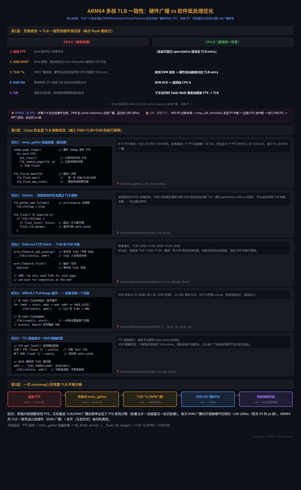

适用范围：Linux 6.18.1 / ARM64 / 当前工作区源码
文档目标：先聚焦 Linux ARM64 虚拟内存管理主线，再补充与 VM 强耦合的匿名页、page cache、页面回收、SLUB、rmap、KSM、Huge Page、页迁移、内存规整、OOM，以及它们与 buddy 和页表管理之间的关系。
Linux ARM64 虚拟内存管理的主线，就是把“CPU 的地址翻译硬件”与“内核维护的地址空间对象”接起来：硬件负责从 VA 走到页表，内核负责决定这段 VA 是否存在、权限是什么、缺页时该补什么页、何时拆映射与刷新 TLB。
如果你先抓住这条主线，后面的 mm_struct、vm_area_struct、Maple Tree、页表、缺页异常、COW、mmap()、munmap()、TLB shootdown 都会自然归位。
这份文档只讨论 ARM64 虚拟内存管理的核心内容：
这份文档前半部分有意不展开：
这些模块当然和 VM 有强联系，但它们不是 ARM64 虚拟内存的第一主线。为了不把主线打散，正文前半先把 fault、VMA、页表、TLB 讲清，再在文末补充这些“围绕 VM 旋转”的相邻子系统专题。
graph TD
A[ARM64 地址翻译硬件] --> B[Linux 地址空间对象]
B --> C[VMA 管理]
C --> D[页表建立与修改]
D --> E[缺页异常处理]
E --> F[匿名页和文件页]
D --> G[TLB 与 ASID]
C --> H[mmap munmap mprotect mremap]
E --> I[fork 与 COW]
A1[TTBR0/TTBR1 TCR MAIR SCTLR] --> A
A2[4KB Granule 多级页表] --> A
A3[EL0 Data/Instr Abort] --> A
B1[mm_struct] --> B
B2[vm_area_struct] --> B
B3[Maple Tree] --> B
F1[匿名缺页] --> F
F2[filemap_fault] --> F建议按这张图的顺序学习，不要一开始就扎进单个函数。
把 ARM64 Linux VM 拆成下面四层：
CPU 拿到虚拟地址后，使用 TTBR、TCR、MAIR、页表项权限位来完成地址翻译。
这层回答的是：
内核用 mm_struct 和 vm_area_struct 描述一个进程有哪些虚拟地址区间，以及这些区间应该具有什么属性。
这层回答的是：
内核根据 VMA 策略，在真正访问时建立、修改或删除页表项。
这层回答的是：
当 CPU 因为页不存在、权限不对、COW 等原因触发异常时，Linux 进入 fault 路径处理。
这层回答的是：
这一部分不是为了学体系结构考试，而是为了后面读 Linux fault 和页表代码时不迷路。
ARM64 EL1 下通常有两套翻译基址：
TTBR0_EL1：通常给用户地址空间TTBR1_EL1：通常给内核地址空间Linux 的直觉化理解是：
TTBR0_EL1 翻译TTBR1_EL1 翻译所以“切换进程地址空间”最核心的硬件动作之一，就是切换用户态那部分页表根；而内核全局映射一般保持在 TTBR1 侧。
这里要先补一句非常关键的话：
“每个 CPU 都有独立的 MMU” 这件事，在 Linux 里不是一句抽象描述，而是每个 CPU 都必须亲自执行一遍 cpu_setup -> enable_mmu -> 装入 VBAR/TTBR -> 运行中按需切换 这条准备链。
如果不把这条链补上，只看 TTBR0_EL1 / TTBR1_EL1 的概念，很容易误以为“页表一建好，所有 CPU 自然就会用”。实际上不是这样。
在 arch/arm64/kernel/head.S 里，无论是 boot CPU 还是 secondary CPU，都会先走：
__cpu_setup__enable_mmuprimary_switched() / secondary_switched()对应关系是：
cpu_setup，然后 enable_mmusecondary_startup 里也先调 cpu_setup，再调 enable_mmuprimary_switched() / secondary_switched()，再继续装 VBAR_EL1 等运行时状态这一步说明的不是“有一台机器有一个 MMU 配置”，而是：
每个 CPU 上电进入内核后，都要自己把本地翻译硬件寄存器准备好。
__cpu_setup 做的是“给这个 CPU 的 MMU 写规则”__cpu_setup 在 arch/arm64/mm/proc.S 里，它做的事情本质上是给“当前这个 CPU”的本地翻译硬件编程。
最关键的动作有：
tlbi vmalle1：先清本地 TLB 状态msr mair_el1, mair：写当前 CPU 的内存属性编码msr tcr_el1, tcr：写当前 CPU 的翻译规则tcr2_el1SCTLR_EL1 的默认值也就是说，__cpu_setup 还没有真正“切进某个进程页表”，它先做的是：
__enable_mmu 做的是“给这个 CPU 装上页表根并真正开 MMU”__enable_mmu 在 arch/arm64/kernel/head.S 里，关键动作是：
msr ttbr0_el1, x2load_ttbr1 x1, x1, x3set_sctlr_el1 x0这三步可以直接理解成：
SCTLR_EL1 里的 MMU 开关，让这个 CPU 开始按页表翻译地址所以“每 CPU 独立 MMU”的最硬核体现就在这里：
CPU0 打开 MMU，不会自动替 CPU1 把 TTBRx_EL1、TCR_EL1、SCTLR_EL1 写好；CPU1 必须自己走一遍同样的初始化路径。
只打开 MMU 还不够。MMU 打开后，Linux 还会在：
__primary_switched()__secondary_switched()里继续设置：
VBAR_EL1这一步和 entry.S 直接相关，因为没有 VBAR_EL1 -> vectors 这条链，这个 CPU 之后连异常入口都接不住。
所以顺序应该这样记：
__cpu_setup：翻译规则就位__enable_mmu：MMU 开启，TTBR 生效VBAR_EL1 = vectors：异常入口就位启动完成后，“每 CPU 独立 MMU”还会继续体现在运行时上下文切换里。
Linux ARM64 的关键函数是 arch/arm64/mm/context.c 里的 cpu_do_switch_mm()：
ttbr1_el1asidttbr0ttbr1_el1ttbr0_el1这说明：
如果另一个 CPU 还在运行别的任务，它的 TTBR0_EL1 可以完全不同。
entry.S 不是最初初始化 MMU，但它持续消费这套每 CPU 状态你刚才指出的缺口是对的：如果只讲 TTBR0/TTBR1 和 TLB，不把 entry.S 放进来，这条链是不闭合的。
entry.S 虽然不负责最初的 cpu_setup / enable_mmu，但它持续依赖并操作每 CPU 的运行时 MMU 相关状态。例如：
VBAR_EL1kernel_entry / kernel_exit 处理异常前后寄存器现场swpan_entry_el0 / swpan_exit_el0 在 SW PAN 场景下处理 TTBR0 访问开关也就是说，entry.S 的角色不是“第一次把 MMU 打开”，而是：
在这个 CPU 已经拥有自己 MMU 上下文之后，负责在异常进入/退出时正确使用和切换这套本地硬件状态。
flowchart TD
A[CPU 上电进入内核] --> B[head.S: __cpu_setup]
B --> C[proc.S: 写 MAIR_EL1/TCR_EL1 等本地翻译规则]
C --> D[head.S: __enable_mmu]
D --> E[给当前 CPU 装 TTBR0_EL1/TTBR1_EL1 并置位 SCTLR_EL1.M]
E --> F[__primary_switched 或 __secondary_switched]
F --> G[给当前 CPU 写 VBAR_EL1 = vectors]
G --> H[CPU 进入正常内核运行]
H --> I[context.c: cpu_do_switch_mm]
I --> J[运行时按任务切换当前 CPU 的 TTBR0/ASID]
H --> K[entry.S]
K --> L[异常进入/返回时消费这套本地 MMU 与向量状态]如果把这张图看懂，“每个 CPU 都有独立 MMU”就不会再抽象了。它真正指的是：
TCR_EL1/TTBRx_EL1/SCTLR_EL1/VBAR_EL1所以正确理解不是“每个 CPU 有一套互相隔离的虚拟内存宇宙”，而是：
每个 CPU 有自己独立的翻译硬件现场，但这些现场可以指向相同或不同的页表对象。
TCR_EL1 决定翻译规则，最常见要点：
你读 ARM64 内核 VM 时，要把 VA_BITS、PAGE_SHIFT、CONFIG_PGTABLE_LEVELS 和 TCR 联系起来看。
ARM64 Linux 启动阶段会在 arch/arm64/mm/proc.S 里拼出默认 TCR_EL1 值：
mov_q tcr, TCR_T0SZ(IDMAP_VA_BITS) | TCR_T1SZ(VA_BITS_MIN) | TCR_CACHE_FLAGS | \
TCR_SHARED | TCR_TG_FLAGS | TCR_KASLR_FLAGS | TCR_ASID16 | \
TCR_TBI0 | TCR_A1 | TCR_KASAN_SW_FLAGS | TCR_MTE_FLAGS这行很重要，因为它把 ARM64 Linux VM 的几个核心假设一次性全写进硬件寄存器了。
T0SZ / T1SZLinux 宏定义在 arch/arm64/include/asm/pgtable-hwdef.h：
#define TCR_T0SZ(x) ((UL(64) - (x)) << TCR_T0SZ_OFFSET)
#define TCR_T1SZ(x) ((UL(64) - (x)) << TCR_T1SZ_OFFSET)这里的关键不是死记位偏移，而是理解它表达的语义：
x 表示地址有效位数TxSZ = 64 - xTCR_T1SZ(VA_BITS)，本质上是在告诉 CPU：TTBR1 这侧的虚拟地址空间有多少有效位直观理解：
T0SZ 主要控制 TTBR0_EL1 侧，也就是用户地址翻译范围T1SZ 主要控制 TTBR1_EL1 侧，也就是内核地址翻译范围TG0 / TG1页粒度大小。Linux 在 arch/arm64/mm/proc.S 里用 TCR_TG_FLAGS 统一选择：
TCR_TG0_4K | TCR_TG1_4KTCR_TG0_16K | TCR_TG1_16KTCR_TG0_64K | TCR_TG1_64K这会直接影响：
IRGNx / ORGNx这两组位定义页表遍历本身的 cacheability，不是普通数据页的 AttrIndx。Linux 用：
TCR_IRGN_WBWATCR_ORGN_WBWA并在 arch/arm64/mm/proc.S 里组合成 TCR_CACHE_FLAGS，注释就是：
PTWs cacheable, inner/outer WBWA这句话的意思是：
SH0 / SH1shareability。Linux 用 TCR_SHARED，在 arch/arm64/include/asm/pgtable-hwdef.h 里定义为：
TCR_SH0_INNER | TCR_SH1_INNER直观含义：
IPS物理地址位宽。Linux 在 arch/arm64/mm/proc.S 里根据 CPU 能力动态计算并写入 TCR_EL1.IPS。
你可以把它理解成：
ASID16Linux 打开 TCR_ASID16，表示使用 16-bit ASID。它和后面的 TLB/上下文切换强相关，核心收益是：
这里还要顺手抓住 TCR_A1 的含义，因为它直接决定“查 TLB 时当前 ASID 从哪里来”：
TCR_A1 置 1TTBR1_EL1 的 ASID 字段TTBR0_EL1、内核 VA 主要走 TTBR1_EL1”这件事所以不要把下面两件事混在一起：
TTBR0 / TTBR1 解决的是“页表 walk 从哪棵树开始”TCR_A1 解决的是“当前翻译使用哪个 TTBR 中携带的 ASID”TBI0 / TBI1 / TBIDxTop Byte Ignore。它控制地址高字节是否参与地址翻译。Linux 在 KASAN/MTE/Tagged Address ABI 场景下很依赖这些位。
直观理解：
HA / HD硬件 Access Flag / Dirty 管理相关位。Linux 在 arch/arm64/mm/proc.S 里会根据 CPU 能力决定是否打开 TCR_HA。
这背后的语义是：
TCR_EL1 不是“页表内容”，它是“CPU 要如何解释这棵页表”的总开关。页表里存的是条目，而 TCR_EL1 决定：
MAIR_EL1 决定内存属性索引背后的真实语义，例如：
Linux 页表项里不是直接写“这是设备内存”，而是写 AttrIndx，再由 MAIR 解释。
你可以把 MAIR_EL1 理解成一张“内存属性字典表”：
AttrIndxMAIR_EL1 里按槽位保存这个索引对应的真实属性编码MAIR_EL1所以：
MAIR_EL1 回答的是“这个槽具体表示什么内存类型”Linux 在 arch/arm64/mm/proc.S 里定义了：
#define MAIR_EL1_SET \
(MAIR_ATTRIDX(MAIR_ATTR_DEVICE_nGnRnE, MT_DEVICE_nGnRnE) | \
MAIR_ATTRIDX(MAIR_ATTR_DEVICE_nGnRE, MT_DEVICE_nGnRE) | \
MAIR_ATTRIDX(MAIR_ATTR_NORMAL_NC, MT_NORMAL_NC) | \
MAIR_ATTRIDX(MAIR_ATTR_NORMAL, MT_NORMAL) | \
MAIR_ATTRIDX(MAIR_ATTR_NORMAL, MT_NORMAL_TAGGED))而索引定义在 arch/arm64/include/asm/memory.h：
MT_NORMAL = 0MT_NORMAL_TAGGED = 1MT_NORMAL_NC = 2MT_DEVICE_nGnRnE = 3MT_DEVICE_nGnRE = 4属性编码定义在 arch/arm64/include/asm/sysreg.h：
MAIR_ATTR_NORMAL = 0xffMAIR_ATTR_NORMAL_NC = 0x44MAIR_ATTR_DEVICE_nGnRnE = 0x00MAIR_ATTR_DEVICE_nGnRE = 0x04Normal普通缓存内存。绝大多数内核线性映射、用户普通内存、page cache 都属于这一类。
Normal_NC普通非缓存内存。它还是“正常内存语义”，但不走普通缓存策略。
Device_nGnRnE设备内存，严格顺序，含义是：
这是最强约束的设备类型。
Device_nGnRE也是设备内存，但比 nGnRnE 略宽松，允许 Early write acknowledgement。
Normal_Tagged与 MTE/tagged pointer 相关。Linux 启动早期先按 Normal memory 放，后续如果硬件支持 MTE，再切换到 tagged 语义。
连接点是 PTE_ATTRINDX()，定义在 arch/arm64/include/asm/pgtable-hwdef.h。
也就是说：
AttrIndxAttrIndx(MT_NORMAL) 表示“去 MAIR 里找 Normal 那个槽”AttrIndx(MT_DEVICE_nGnRnE) 表示“去 MAIR 里找设备内存槽”Linux 里很直观的例子在 arch/arm64/include/asm/pgtable-prot.h：
PROT_NORMAL = ... | PTE_ATTRINDX(MT_NORMAL)PROT_DEVICE_nGnRnE = ... | PTE_ATTRINDX(MT_DEVICE_nGnRnE)所以真正的完整链条是：
pgprot_t 选择某个 MT_xxxAttrIndxMAIR_EL1 把这个索引翻译成真实内存属性页表项里不是直接写“缓存/设备/非缓存”的全文，而是写一个索引；MAIR_EL1 才是这组索引对应含义的总字典。
ARM64 的页表级数受虚拟地址位数和页大小影响。你在 4KB granule 下最常见的是：
但不是每次都真的有独立 5 级，取决于配置和宏折叠。
学习时要记住：
当翻译失败或者权限检查失败时，ARM64 会产生内存访问异常。对 Linux VM 最重要的是：
ARM64 用户态缺页主入口可以从这里开始读：
这一部分是整个 VM 学习的“骨架”。
mm_struct 是进程用户地址空间的总对象，定义在 include/linux/mm_types.h。
你至少要先认识这些成员：
mm_mt：当前 VMA 主索引，Maple Treepgd：用户页表根mmap_lock：地址空间修改与查找的重要锁map_count：VMA 数量page_table_lock：部分页表和计数保护mmap_base / task_size：用户地址空间布局关键参数最关键的理解：
mm_struct 是“这个进程拥有怎样的用户虚拟地址空间”的内核状态总和。
vm_area_struct 定义在 include/linux/mm_types.h。
一个 VMA 表示一段连续的地址区间 [vm_start, vm_end)，这段区间内部的访问属性和来源是一致的。
最重要成员：
vm_start / vm_endvm_mmvm_page_protvm_flagsvm_filevm_pgoffanon_vmavm_ops最关键的理解：
VMA 不是页表，也不是物理页，它是“这段地址应该怎么被对待”的策略描述。
mm_struct 里现在是 struct maple_tree mm_mt;，见 include/linux/mm_types.h。
你要明确三件事：
mm_rbVMA_ITERATOR / vma_iter_init() 是当前 VMA 遍历入口之一，见 include/linux/mm_types.hshared.rb 不是 VMA 主树vm_area_struct 里仍然还有：
struct {
struct rb_node rb;
unsigned long rb_subtree_last;
} shared;这不是旧的 VMA 主树残留，而是文件映射反向查询用的 i_mmap interval tree 节点。它服务的是“一个文件页范围被哪些 VMA 映射”，不是“一个进程有哪些 VMA”。
相关代码：
学习 ARM64 VM 时，不要只盯着用户态。你需要同时分清用户地址和内核地址。
用户地址空间主要受这些因素控制：
task_sizemmap_base典型组成：
这些区间在内核里都会表现为一个或多个 VMA。
ARM64 学习 VM 时，必须把下面几块区分开：
你之前如果已经在研究 ARM64 地址转换，这一点尤其关键：
vmalloc 是理解“内核虚拟地址空间”和“普通用户缺页路径不是一回事”最好的例子之一。
先说最关键的结论：
vmalloc 不是去拿一块物理连续大内存，而是先保留一段内核虚拟地址，再从 buddy allocator 拿很多普通物理页，最后把这些页逐页映射进去。
所以它提供的是：
这和 kmalloc 很不一样。kmalloc 更偏向直接拿物理上连续、或者至少由 slab/buddy 直接组织好的对象；vmalloc 则明显更依赖页表来“拼接”地址空间。
vmalloc() 主调用链如果只看最典型的 vmalloc(size)，主路径可以先压成下面这条链：
vmalloc(size)
-> vmalloc_noprof(size)
-> __vmalloc_node_noprof(size, 1, GFP_KERNEL, NUMA_NO_NODE, caller)
-> __vmalloc_node_range_noprof(...)
-> __get_vm_area_node(...)
-> __vmalloc_area_node(...)
-> vm_area_alloc_pages(...)
-> alloc_pages_*() / alloc_pages_bulk_*()
-> vmap_pages_range(...)
-> vmap_range_noflush(...)
-> 返回一段 vmalloc 区间里的虚拟地址最值得先盯住的关键函数点是：
vmalloc_noprof()：vmalloc() 宏展开后的公开实现入口。__vmalloc_noprof()：带 gfp_mask 的通用入口。__vmalloc_node_noprof()：把默认参数补齐后转到 range 接口。__vmalloc_node_range_noprof()：vmalloc 主调度函数。__get_vm_area_node()：先在 vmalloc 地址空间里保留虚拟区间。__vmalloc_area_node()：真正分配物理页并建立页表映射。vm_area_alloc_pages()：真正向底层页分配器要页。vmap_pages_range()：把这些物理页装入 vmalloc 页表。如果你只盯着 vmalloc() 返回一段地址，很容易把重点放错。真正决定它“从哪段虚拟地址拿空间”的，不是 buddy，而是 mm/vmalloc.c 里对 vmap_area 的管理。
这里最关键的结论是：
vmalloc 先在 free tree 里找一段合适的虚拟区，分配成功后再把该区间插入 busy tree；释放时从 busy tree 摘掉，再插回 free tree，并尽量和前后相邻空闲区合并。
可以把它理解成两套索引：
free_vmap_area_rootvmap_node 都有自己的 busy.root如果只从算法视角看，vmalloc 区间管理其实是下面几种算法叠在一起：
vmap_area 以 va_start 为键组织成 rb-tree，保证查找、插入、删除的基本复杂度是 $O(\log n)$。vmap_area 同时挂在有序链表里，便于在释放时用 prev/next 做相邻块合并，邻居检查接近 $O(1)$。subtree_max_size，表示“以这个节点为根的子树里，最大的可用空闲区间有多大”。这使得分配时能快速剪枝。find_vmap_lowest_match() 不是 best-fit，而是“在满足大小和对齐的前提下，尽量找最低地址的第一块”。classify_va_fit_type() + va_clip() 会把命中的 free range 分成 FL/LE/RE/NE 四种情况，对应整块拿走、左切、右切、中间切开。__merge_or_add_vmap_area() 通过 prev/next sibling 判断首尾是否相接，如果相接就原地扩展区间，避免 free tree 碎片化。__find_vmap_area() 是标准的区间点查询，判断条件是 addr < va_start、addr >= va_end 或命中 [va_start, va_end)。augment_tree_propagate_from() 不会每次全树重算，而是从修改点向上更新 subtree_max_size，直到父节点不再变化为止。把它们合在一起理解，可以得到一个最重要的工程结论：
free tree 负责“找空位 + 剪枝 + 切分 + 合并”，busy tree 负责“按地址精确定位已分配区间”。
find_vmap_lowest_match() 伪代码如果把源码逻辑压成伪代码，find_vmap_lowest_match() 大致可以写成下面这样：
input:
root = free_vmap_area_root
size = 请求大小
align = 对齐要求
vstart = 允许搜索的最低起点
length = size 或 size + align - 1
node = root
while node != NULL:
va = node_to_vmap_area(node)
if left_subtree.max_size >= length and vstart < va.va_start:
node = node.left
continue
if is_within_this_va(va, size, align, vstart):
return va
if right_subtree.max_size >= length:
node = node.right
continue
while parent(node) != NULL:
node = parent(node)
va = node_to_vmap_area(node)
if is_within_this_va(va, size, align, vstart):
return va
if right_subtree(node).max_size >= length and vstart <= va.va_start:
vstart = va.va_start + 1
node = node.right
break
return NULL这里最容易忽略的两点是：
vstart = parent->va_start + 1，避免重新钻回已经确认失败的子树。所以这段代码的搜索模式更准确地说是：
带增强信息剪枝的 lowest-fit 搜索 + 必要时的父链回溯。
subtree_max_size 的定义与更新公式free tree 每个节点维护的不是“自己这块有多大”这么简单，而是：
$$
subtree\_max\_size(va)=\max\Big(va\_size(va),\ subtree\_max\_size(left),\ subtree\_max\_size(right)\Big)
$$
这正是源码里 compute_subtree_max_size() 做的事情。
它的意义是：
subtree_max_size 更新传播下面这张图专门表达 augment_tree_propagate_from() 的增量传播过程。重点不是“从叶子一路无脑更新到根”，而是“更新到父节点值不再变化就停”。
flowchart TD
A[某个 free node 被修改] --> B{为什么修改?}
B -->|新插入| C[节点初始 subtree_max_size 先置 0]
B -->|分配切分| D[va_start 或 va_end 被缩小]
B -->|释放合并| E[va_start 或 va_end 被扩大]
C --> F[从当前节点开始重新计算]
D --> F
E --> F
F --> G[computed = max self_size left_max right_max]
G --> H{computed != old_value?}
H -- yes --> I[更新当前节点 subtree_max_size]
I --> J[继续向父节点传播]
J --> G
H -- no --> K[停止传播]这个算法的关键收益是：
把 augment_tree_propagate_from() 放到具体场景里，可以看到它为什么能提前停止：
stateDiagram-v2
[*] --> Insert
Insert: 场景1 新节点插入
Insert --> InsertProp: 新节点先入树\nsubtree_max_size=0
InsertProp --> Stop1: 自底向上修正\n直到父节点值稳定
Stop1 --> Shrink
Shrink: 场景2 分配后节点被缩小
Shrink --> ShrinkProp: 如果当前节点仍不是父子树最大值\n传播可能很快停止
ShrinkProp --> Stop2: 父节点摘要没变就停
Stop2 --> Merge
Merge: 场景3 释放后节点被扩大
Merge --> MergeProp: 更大的 hole 可能改变父摘要
MergeProp --> Stop3: 只在必要时继续向上改写这也解释了源码注释里的那个意思：
subtree_max_size 才会继续向上传播。find_va_links() 的算法作用前面的图都默认“已经知道往哪插”，但真正找插入点的函数是 find_va_links()。
它做的其实是两件事：
va_start/va_end 在 rb-tree 中做标准二叉搜索，找未来的 parent + link。if new.va_end <= cur.va_start:
go left
else if new.va_start >= cur.va_end:
go right
else:
overlap bug所以 find_va_links() 不只是“找插入位置”，它还是区间正确性的第一道防线：
WARN()。把这些算法合在一起，vmalloc 区间管理的复杂度可以总结成：
subtree_max_size 传播：沿父链更新，典型 $O(\log n)$。所以它不是“一个单一算法”，而是一组互相配合的数据结构与增量维护策略。
va_clip() 四种切分分支的逐帧理解前面已经说了 FL/LE/RE/NE 四种 fit type，但如果不把每一种切分前后画出来，读源码时还是很容易混。可以把 va_clip() 理解成：
给定一个命中的 free range va=[va_start, va_end)，把其中一段 NVA=[nva_start_addr, nva_start_addr + size) 切出去，然后决定 free tree 里剩下什么。
FL_FIT_TYPEFL_FIT_TYPE 表示新分配区间正好等于整个 free node。
stateDiagram-v2
[*] --> BeforeFL
BeforeFL: free node = [-----------]
BeforeFL --> HitFL: NVA = [-----------]
HitFL --> AfterFL: unlink_va_augment(va)\nkmem_cache_free(va)
AfterFL: free tree 中这个节点彻底消失这时算法动作最简单：
LE_FIT_TYPELE_FIT_TYPE 表示命中的是 free node 左边，右边还有剩余空间。
stateDiagram-v2
[*] --> BeforeLE
BeforeLE: [NVA-----------R]
BeforeLE --> ClipLE: va->va_start += size
ClipLE --> AfterLE
AfterLE: free node 变成 [R]这里的核心是：
va_start 向右推进到 nva_start_addr + size。va 对象。RE_FIT_TYPERE_FIT_TYPE 表示命中的是 free node 右边，左边还有剩余空间。
stateDiagram-v2
[*] --> BeforeRE
BeforeRE: [L-----------NVA]
BeforeRE --> ClipRE: va->va_end = nva_start_addr
ClipRE --> AfterRE
AfterRE: free node 变成 [L]这里和 LE_FIT_TYPE 对称：
va_end 收缩到 nva_start_addr。NE_FIT_TYPENE_FIT_TYPE 最关键，因为它会把一个 free node 一切为二。
stateDiagram-v2
[*] --> BeforeNE
BeforeNE: [L---NVA---R]
BeforeNE --> AllocLVA: 分配或预取一个新的 lva 对象
AllocLVA --> BuildLeft: lva = [L]
BuildLeft --> ShrinkRight: 当前 va->va_start = nva_start + size
ShrinkRight --> InsertLeft: insert_vmap_area_augment(lva)
InsertLeft --> AfterNE
AfterNE: free tree 中保留 [L] 和 [R] 两个节点这也是 va_clip() 里唯一需要额外分配一个 vmap_area 元数据对象的场景，因为：
va。lva 表示。ne_fit_preload_node 拿一个预留对象，拿不到才 kmem_cache_alloc(..., GFP_NOWAIT)。把四种情况统一起来，你可以记成下面这张表：
| fit type | NVA 位置 | free tree 剩余节点数 | 是否需要新 vmap_area |
|---|---|---|---|
FL_FIT_TYPE |
整块 | 0 | 否 |
LE_FIT_TYPE |
左侧 | 1 个右残块 | 否 |
RE_FIT_TYPE |
右侧 | 1 个左残块 | 否 |
NE_FIT_TYPE |
中间 | 2 个残块 | 是 |
这张表背后的工程意义是：
NE_FIT_TYPE 是最贵的切分情况。ne_fit_preload_node，避免在关键路径上临时分配失败。__merge_or_add_vmap_area() 的三种合并路径释放回 free tree 时，__merge_or_add_vmap_area() 会先找到“如果要插入，这个节点应该放哪”，然后只检查前后两个相邻 sibling，不会去全树扫描。
它实际有三种分支：
stateDiagram-v2
[*] --> RightOnlyBefore
RightOnlyBefore: [VA][NEXT]
RightOnlyBefore --> CheckRight: next.va_start == va.va_end
CheckRight --> MergeRight: next.va_start = va.va_start
MergeRight --> FreeOldVA: kmem_cache_free(va)
FreeOldVA --> RightOnlyAfter
RightOnlyAfter: 结果 = [merged_next]这里的关键点是：
next 搬出来新建节点。va_start 往左扩展。va 元数据对象释放掉。stateDiagram-v2
[*] --> LeftOnlyBefore
LeftOnlyBefore: [PREV][VA]
LeftOnlyBefore --> CheckLeft: prev.va_end == va.va_start
CheckLeft --> MergeLeft: prev.va_end = va.va_end
MergeLeft --> FreeOldVA2: kmem_cache_free(va)
FreeOldVA2 --> LeftOnlyAfter
LeftOnlyAfter: 结果 = [merged_prev]这里和右合并对称：
va_end。va 被释放。这条路径最值得单独讲，因为源码里有一个不太直观的顺序要求。
sequenceDiagram
participant Prev as prev sibling
participant VA as current free chunk
participant Next as next sibling
participant Tree as free tree
VA->>Next: 先检测 next.va_start == va.va_end
Next-->>VA: yes
VA->>Next: 把 next.va_start 扩到 va.va_start
VA->>VA: va = next, merged = true
VA->>Prev: 再检测 prev.va_end == va.va_start
Prev-->>VA: yes
VA->>Tree: __unlink_va(va) 先把右侧 merged 节点摘掉
VA->>Prev: prev.va_end = va.va_end
VA->>VA: kmem_cache_free(va)这里源码为什么强调“先 unlink 右邻居，再并到左邻居”，原因是：
这就是源码注释里那句“otherwise the tree might not be fully populated”的实际含义。
flowchart TD
A[free 一个区间 va] --> B[find_va_links 找潜在插入点]
B --> C[get_va_next_sibling 取 next]
C --> D{next 存在且 next.va_start == va.va_end?}
D -- yes --> E[先和右邻居合并]
D -- no --> F[保持原 va]
E --> G{prev 存在且 prev.va_end == va.va_start?}
F --> G
G -- yes --> H{之前是否已和右边合并?}
H -- yes --> I[先 __unlink_va 右侧 merged 节点]
I --> J[再扩展左邻居]
H -- no --> J
G -- no --> K{是否发生过任何合并?}
J --> L[最终 merged = true]
K -- no --> M[__link_va 插入新 free node]
K -- yes --> N[无需新插入\n直接保留已扩展邻居]
L --> N__merge_or_add_vmap_area() 做合并时，本质上是在复用“相邻已存在 free node”的元数据对象，而不是总保留当前释放出来的 va。这也是为什么源码里会反复出现：
va_start/va_endkmem_cache_free(vmap_area_cachep, va)va = sibling换句话说，逻辑上的“合并结果”并不一定继续由最初那个 va 结构体承载。
下面这张图对应 find_vmap_lowest_match() 的动态过程。关键不是“遍历整棵树”，而是借助 subtree_max_size 跳过不可能成功的子树。
flowchart TD
A[alloc_vmap_area] --> B[__alloc_vmap_area]
B --> C[find_vmap_lowest_match]
C --> D{left subtree max >= length\nand vstart < va_start?}
D -- yes --> E[向左子树继续找更低地址]
E --> D
D -- no --> F{当前 va 自身能否容纳\nsize + align?}
F -- yes --> G[命中当前 free range]
F -- no --> H{right subtree max >= length?}
H -- yes --> I[转向右子树]
I --> D
H -- no --> J[回溯到父节点]
J --> K{父节点本身能否容纳?}
K -- yes --> G
K -- no --> L{父节点右子树还有希望?}
L -- yes --> M[更新 vstart = parent->va_start + 1\n进入该父节点右子树]
M --> D
L -- no --> N[继续向上回溯]
N --> J
G --> O[va_alloc]
O --> P[va_clip 切分剩余 free range]这里的算法要点是：
subtree_max_size 相当于“这棵子树值得不值得继续搜索”的摘要信息。size + align - 1 估算最坏情况。命中某个 free range 之后，并不是总把整个节点拿走。va_clip() 的四种切分形态如下：
flowchart LR
A[命中一个 free range] --> B{classify_va_fit_type}
B -->|FL_FIT_TYPE| C[整块完全匹配\nunlink free node]
B -->|LE_FIT_TYPE| D[左边命中\nva_start += size]
B -->|RE_FIT_TYPE| E[右边命中\nva_end = nva_start]
B -->|NE_FIT_TYPE| F[中间命中\n构造左残块 lva\n当前 va 缩成右残块]
C --> G[返回新分配区间]
D --> H[augment_tree_propagate_from]
E --> H
F --> I[insert_vmap_area_augment(lva)]
I --> H
H --> G这一步的算法意义很大：
vmalloc 分配的是“虚拟地址子区间”，不是整个 free node 对象。[nva_start_addr, nva_start_addr + size)。插入本身并不复杂，复杂的是插入后要同时维护两份有序结构，以及 free tree 的增强信息。
sequenceDiagram
participant Caller as alloc_vmap_area
participant Tree as rb-tree
participant List as ordered list
participant Aug as subtree_max_size
Caller->>Tree: find_va_links(va)
Tree-->>Caller: parent + link
Caller->>Tree: rb_link_node / rb_insert_color
Caller->>List: list_add by address order
alt free tree augmented insert
Caller->>Tree: rb_insert_augmented
Caller->>Aug: augment_tree_propagate_from(va)
else busy tree normal insert
Caller->>Tree: 仅维护普通 rb-tree 平衡
end这里要特别区分两种插入：
subtree_max_size。释放侧最关键的不是 vfree() 本身，而是“摘 busy tree -> 回插 free tree -> 检查相邻区间是否可以合并”的动态过程：
sequenceDiagram
participant User as vfree/remove_vm_area
participant Busy as busy tree
participant Free as free tree
participant List as ordered list
User->>Busy: find_unlink_vmap_area(addr)
Busy-->>User: va
User->>Free: merge_or_add_vmap_area_augment(va)
Free->>List: find_va_links + get_va_next_sibling
List-->>Free: prev, next
Free->>Free: 检查 next.va_start == va.va_end
Free->>Free: 检查 prev.va_end == va.va_start
alt 两边都不相邻
Free->>Free: __link_va 插入新 free node
else 只和一边相邻
Free->>Free: 扩展相邻区间
else 两边都相邻
Free->>Free: 先 unlink 右邻居\n再把左邻居扩成大区间
end
Free->>Free: augment_tree_propagate_from这个算法设计里最值得注意的是：
把前面的算法放到具体案例里，动态变化如下：
stateDiagram-v2
[*] --> S0
S0: 初始只有一大片 free range
S0 --> S1: alloc A(64K)
S1: busy = A\nfree = tail
S1 --> S2: alloc B(128K)
S2: busy = A,B\nfree = tail
S2 --> S3: alloc C(64K)
S3: busy = A,B,C\nfree = tail
S3 --> S4: vfree(B)
S4: free tree 中出现 B hole
S4 --> S5: alloc D(128K)
S5: D 复用旧 B hole
S5 --> S6: vfree(A), vfree(D)
S6: A hole 与 D hole 相邻\nmerge => [A+D] 大空洞
S6 --> S7: alloc E(192K)
S7: E 落回旧 A 起点这个案例同时体现了四个算法动作：
B 被释放后回插 free tree。D 再分配时，find_vmap_lowest_match() 命中旧 B 区间。A 和 D 释放后，__merge_or_add_vmap_area() 把两个相邻 hole 合并。E 最终证明这个合并结果又能被 first-fit 命中。主路径在：
alloc_vmap_area()__alloc_vmap_area()find_vmap_lowest_match()find_vmap_lowest_match() 的策略不是“随便找到一个就行”，而是：
subtree_max_sizesize + align 要求的 free rangeva_alloc() / va_clip() 把该 free range 切走一块这意味着 vmalloc 的虚拟地址选择策略更接近：
最低地址优先的 first fit，而不是随机挑一块。
一旦 free tree 里挑中了一块区间，alloc_vmap_area() 会把结果写回 va->va_start/va->va_end，然后执行：
insert_vmap_area()这里插入的是当前 node 的 busy.root 和 busy.head，表示：
find_vm_area() / remove_vm_area() / vfree() 都会先从 busy tree 里按地址查到它按地址查找 busy 区间的核心函数是：
__find_vmap_area()find_vmap_area()find_unlink_vmap_area()也就是说：
释放侧的关键路径是：
vfree()remove_vm_area()free_vmap_area()merge_or_add_vmap_area_augment()__merge_or_add_vmap_area()__merge_or_add_vmap_area() 做的事情非常直接：
sibling->va_start == va->va_endsibling->va_end == va->va_start这就是 vmalloc 能维持虚拟地址空间碎片相对可控的核心机制之一。
即使找到了合适的 free range，也不代表整个区间都会被消耗掉。va_clip() 会按四种情况切分：
FL_FIT_TYPE：完全匹配，整个 free node 被拿走LE_FIT_TYPE：命中左边，留下右半段 free rangeRE_FIT_TYPE：命中右边，留下左半段 free rangeNE_FIT_TYPE：命中中间，free range 被一分为二，左半和右半都保留所以从工程视角看，vmalloc 的虚拟地址管理本质上是：
可以用一个最小案例把这三种动作串起来：
A=64K、B=128K、C=64Kvfree(B)D=128Kvfree(A)，再 vfree(D)E=192K这个案例里，你应该期待看到：
D 复用旧 B 的起始地址：体现 free tree 查找到了最低可用旧区间A 和 D 释放后合并：否则 E=192K 无法在原 A+B 的位置放下E 重新落在旧 A 的起始地址：体现相邻 free 区间被合并后再次被 first-fit 命中仓库里现成的模块目录已经补了这个实验：
在当前仓库里可以这样跑：
ARCH=arm64 LLVM=/repo/ybzhang/kernel/rootfs/bin/ \
make -C /repo/ybzhang/kernel/linux-6.18.1 \
M=$PWD/kmodules/mem_allocator_lab modules./launch.sh arm64 runmount -t tracefs nodev /sys/kernel/tracing
echo 1 > /sys/kernel/tracing/events/vmalloc/alloc_vmap_area/enable
echo 1 > /sys/kernel/tracing/events/vmalloc/free_vmap_area_noflush/enable
echo 1 > /sys/kernel/tracing/events/vmalloc/purge_vmap_area_lazy/enable
cat /sys/kernel/tracing/trace_pipeinsmod /mnt/mem_allocator_lab/mem_allocator_lab.ko \
vmalloc_base_kb=64 page_order=2 kmalloc_bytes=96 cache_bytes=128 cache_objects=8
dmesg | grep mem_allocator_lab你重点看两行：
reuse_check reused_old_B=1merge_check reused_old_A=1如果这两个都成立，那么你就把 find_vmap_lowest_match()、insert_vmap_area()、merge_or_add_vmap_area_augment() 这三步用实际地址变化串起来了。
这一步发生在：
__get_vm_area_node()这里的核心动作是：
vm_struct / vmap_area 之类的描述对象这一阶段还没有真正的数据页，因此你可以把它理解成：
先在“内核虚拟地址地图”上圈下一块地。
真正拿物理页发生在：
__vmalloc_area_node()vm_area_alloc_pages()__vmalloc_area_node() 会先给 area->pages 分配一个数组，用来保存每个 PAGE_SIZE 粒度对应的 struct page *。
然后 vm_area_alloc_pages() 才真正去拿页。它的策略大致是：
alloc_pages_*()split_page()，把它重新按小页视角交给 vmalloc 管理也就是说，vmalloc 对底层 physical pages 的要求是：
这一步和 buddy allocator 的关系非常直接：
vmalloc 最后拿到的物理页，本质上还是由 buddy allocator 供应的。
拿到物理页之后，内核还不能直接使用这段地址，因为现在只有：
struct page *把两者接起来的关键函数是：
vmap_pages_range()vmap_pages_range_noflush()vmap_range_noflush()它做的事情本质上就是：
area->pages[]flush_cache_vmap() 一类必要同步所以 vmalloc 的关键工程语义是：
vmalloc 适合大块内存它适合大块内存，根本原因不是“它更强”，而是“它不要求物理连续”。
当系统已经碎片化时：
vmalloc 就可以用页表把这些离散页拼成一段连续虚拟区间代价也很明确：
在 ARM64 上，vmalloc 这条链和用户缺页路径不同，但同样依赖页表管理与 TLB 一致性：
mm_struct 里的 VMA fault 映射HAVE_ARCH_HUGE_VMALLOC、contpte、ARM64 页粒度和页表级数都会影响 vmalloc 的映射效率你可以把 vmalloc 记成一句最准确的话：
它是“内核地址空间里的 vmap 型分配器”，核心不是拿连续物理内存，而是管理一段内核虚拟区间并为它安装页表。
一个最常见误区是把页表当成 VM 的全部。
实际上：
例如一个匿名可写 VMA：
学习 Linux VM 时，至少要知道这些抽象层名：
pgd_tp4d_tpud_tpmd_tpte_t以及两个重要概念：
ptdesc 抽象，定义在 include/linux/mm_types.h学习 ARM64 VM，优先抓这些语义位，而不是一上来背所有 bit layout：
如果你只想先建立读代码的直觉，最值得优先记住的是下面这些位。定义可以直接看 arch/arm64/include/asm/pgtable-hwdef.h 和 arch/arm64/include/asm/pgtable.h。
PTE_VALID表示这个 PTE 对硬件来说是否是有效映射。没有它，CPU 走到这里通常会触发 translation fault。
PTE_USER表示用户态是否可访问。用户态映射通常需要它；纯内核映射通常不会带它。
PTE_RDONLY表示硬件视角的只读限制。注意它和 Linux 软件语义里的“这个 VMA 将来可不可写”不是一回事，因为 COW 场景下 VMA 可以允许写，但当前 PTE 仍可能故意只读。
PTE_AFAccess Flag，表示这页已经被访问过。某些 CPU 能硬件更新它，Linux 也会在 fault 与回收路径里关注它。
PTE_DBMDirty Bit Management 相关位。ARM64 上 Linux 还把它复用为 PTE_WRITE 软件语义位，所以你在代码里会看到：
pte_write(pte) 实际检查的是 PTE_WRITEPTE_WRITE 在头文件里又等同于 PTE_DBM这正说明 Linux 软件层和 ARM64 硬件位语义是交织在一起使用的。
PTE_PXNPrivileged Execute-Never。置位时，特权态不能从这页取指执行。
PTE_UXNUser Execute-Never。置位时，用户态不能从这页取指执行。
PTE_SHARED页的 shareability 属性。Linux 常见正常页映射通常会配成 inner-shareable。
PTE_NGnot Global。和 TLB/ASID 作用域有关，用户态映射通常会涉及它。
你可以先用下面这张简化表建立感觉：
| 关心的问题 | 主要看什么位 |
|---|---|
| 这页是否存在 | PTE_VALID |
| 用户态能否访问 | PTE_USER |
| 当前硬件是否只读 | PTE_RDONLY |
| 用户态能否执行 | PTE_UXN 是否清零 |
| 内核态能否执行 | PTE_PXN 是否清零 |
| 是否被访问过 | PTE_AF |
| 是否带可写/dirty 语义 | PTE_DBM / PTE_WRITE |
| 内存类型是什么 | PTE_ATTRINDX(...) + MAIR_EL1 |
最重要的理解不是逐位硬背，而是知道：
malloc / kmalloc / mmap：先分清谁在做决策先给一句最关键的结论：
用户态 malloc() 不是内核 syscall，它是 libc 分配器策略；内核真正看到的，通常是 brk() 或 mmap()。而内核态对应的“对象分配”接口是 kmalloc()，不是 malloc()。
所以这几个名字不要混：
malloc()：用户态库函数，决定“这次向内核要 heap，还是直接做 mmap()”。brk()：扩展或收缩进程 heap 区，也就是 mm->brk 所在那段 VMA。mmap()：在用户地址空间里建立一段新的映射，匿名或文件都可以。kmalloc()：内核里分配小到中等对象，核心依赖 SLUB/SLAB cache。vmalloc()：内核里分配虚拟连续内存，核心依赖页表和 vmalloc 区间管理。可以先把关系压成下面这张图：
flowchart TD
A[用户代码 malloc] --> B{libc 分配器策略}
B -->|小块/arena 扩容| C[brk]
B -->|大块/独立映射| D[mmap]
C --> E[heap VMA 扩展或收缩]
D --> F[新建或合并用户 VMA]
G[内核代码 kmalloc] --> H[SLUB size-class]
H --> I[per-CPU freelist / partial slab / buddy]
J[内核代码 vmalloc] --> K[vmap_area 查找切分合并]
K --> L[页表映射离散物理页]kmalloc()：内核小对象分配器如果把 kmalloc() 放到和 vmalloc() 同一层理解，最重要的一句是：
kmalloc() 的重点不是管理虚拟地址区间，而是把“请求大小”映射到某个 SLUB cache，然后尽量从现成 slab 的空闲对象里直接拿。
kmalloc() 主调用链典型路径可以压成：
kmalloc(size, flags)
-> kmalloc_noprof(size, flags)
-> 常量 size:
-> __kmalloc_cache_noprof(cache, flags, size)
-> kmem_cache_alloc_noprof(...)
-> slab_alloc_node(...)
-> 非常量或通用路径:
-> __kmalloc_noprof(size, flags)
-> __do_kmalloc_node(size, ..., flags, NUMA_NO_NODE, caller)
-> size > KMALLOC_MAX_CACHE_SIZE ? __kmalloc_large_noprof()
-> kmalloc_slab(size, ...)
-> slab_alloc_node(...)最值得抓住的函数点是：
kmalloc_noprof()：编译期常量大小时，会直接选定 cache，尽量走快路径。__do_kmalloc_node()：通用调度入口，决定走普通 slab 还是大对象分配。kmalloc_slab()：把 size 映射到某个 kmalloc cache。slab_alloc_node()：真正从 SLUB cache 分配对象。___kmalloc_large_node()：超大对象直接走页分配器。kmalloc() 涉及到的核心算法kmalloc() 背后不是单一算法，而是下面几层组合：
KMALLOC_MAX_CACHE_SIZE 时不再走对象 cache，而是直接按页分配。最重要的区分是：
kmalloc() 决策树flowchart TD
A[kmalloc size flags] --> B{size 是否是编译期常量?}
B -- yes --> C{size > KMALLOC_MAX_CACHE_SIZE?}
C -- yes --> D[__kmalloc_large_noprof]
C -- no --> E[kmalloc_index / kmalloc_type]
E --> F[选中 kmalloc cache]
F --> G[kmem_cache_alloc_noprof]
G --> H[slab_alloc_node]
B -- no --> I[__kmalloc_noprof]
I --> J[__do_kmalloc_node]
J --> K{size > KMALLOC_MAX_CACHE_SIZE?}
K -- yes --> D
K -- no --> L[kmalloc_slab]
L --> Hflowchart TD
A[slab_alloc_node] --> B{当前 CPU freelist 有对象?}
B -- yes --> C[直接弹出一个对象]
B -- no --> D{当前 slab 还有可分配对象?}
D -- yes --> E[从当前 slab 取对象并更新 freelist]
D -- no --> F{node partial slab 可用?}
F -- yes --> G[切换到 partial slab]
G --> E
F -- no --> H[向 buddy 申请新 slab 页]
H --> I[初始化 slab 元数据]
I --> E
C --> J[返回对象]
E --> Jkmalloc() 和 vmalloc() 的根本差异把两者放一起看，最该记住的是：
kmalloc() 重点是“对象 cache + slab 页”。vmalloc() 重点是“虚拟区间 + 页表映射”。kmalloc() 返回的大多数对象本来就在线性映射里，可直接访问。vmalloc() 返回的是 vmalloc 区域虚拟地址，背后物理页可以离散。所以：
kmalloc() 更像对象分配器。vmalloc() 更像内核虚拟地址空间分配器。malloc()：真正的策略层在 libc很多人第一次学 VM 会误以为：
malloc()
-> 内核分配内存这其实不对。更准确的说法是：
malloc()
-> libc allocator 决定从 arena/heap 取，还是向内核继续要地址空间
-> 如果需要向内核要空间，通常走 brk 或 mmap也就是说：
malloc() 是用户态策略。brk() / mmap() 才是内核接口。mmap()，多小时留在 heap/arena”主要是 libc 策略，不是内核 ABI。malloc() 的典型决策flowchart TD
A[malloc n bytes] --> B{线程 arena / tcache / bins 可满足?}
B -- yes --> C[直接返回现成块]
B -- no --> D{是否适合扩 heap?}
D -- yes --> E[调用 brk 或内部 sbrk 路径]
D -- no --> F[调用 mmap 创建独立映射]
E --> G[heap VMA 变大]
F --> H[新增一个 mmap VMA]
G --> I[切分用户态 chunk]
H --> I
I --> J[返回 malloc 指针]这里最关键的理解是：
malloc() 指针只是用户态 allocator 切出来的 chunk。mmap()。malloc() 结果，不能直接推断内核一定做了哪条 syscall。brk()：扩展 heap VMA，而不是新建一个独立 mmap 区如果把 malloc() 走 heap 的情况落到内核，最核心的路径在：
最关键的结论是：
brk() 更像“调整 heap 末端”，不是像 mmap() 一样在地址空间任意位置新插一段映射。
brk() 的主要算法动作min_brk、RLIMIT_DATA 等限制。brk 页对齐，判断是扩展还是收缩。do_vmi_align_munmap() 解除尾部区间。do_brk_flags() 去扩现有 brk VMA，或必要时创建匿名 VMA。brk() 决策树flowchart TD
A[brk new_end] --> B[检查 min_brk 和 RLIMIT_DATA]
B --> C[PAGE_ALIGN 新旧 brk]
C --> D{oldbrk == newbrk?}
D -- yes --> E[仅更新 mm->brk]
D -- no --> F{是收缩吗?}
F -- yes --> G[do_vmi_align_munmap 解除尾部]
F -- no --> H[check_brk_limits]
H --> I[检查 next VMA guard gap]
I --> J[do_brk_flags]
J --> K[扩展或创建 brk VMA]mmap()：真正的“建立用户映射”主路径mmap() 和 brk() 的最大区别是：
mmap() 不是只动 heap 尾端，而是在用户地址空间里选择一段合适区间，然后新建或合并 VMA。
mmap() 主调用链典型路径可以压成：
sys_mmap_pgoff
-> ksys_mmap_pgoff
-> vm_mmap_pgoff
-> do_mmap
-> __get_unmapped_area
-> mm_get_unmapped_area_vmflags
-> generic_get_unmapped_area / generic_get_unmapped_area_topdown
-> vm_unmapped_area
-> mmap_region
-> __mmap_region
-> __mmap_prepare
-> vma_merge_new_range (if possible)
-> __mmap_new_vma (if merge fails)
-> __mmap_complete这条链里最值得先抓住的函数是：
do_mmap()：参数检查、权限转换、地址选择、最后调用 mmap_region()。__get_unmapped_area()：决定这段映射要放在哪里。generic_get_unmapped_area() / generic_get_unmapped_area_topdown()：底向上或顶向下查找空洞。mmap_region()：真正进入 VMA 创建/合并阶段。vma_merge_new_range()：能并就并。__mmap_new_vma()：不能合并就分配一个新 VMA 并插入 Maple Tree。mmap() 涉及到的核心算法和 vmalloc 一样，mmap() 也不是单一算法，而是几层叠加：
[low_limit, high_limit) 内查找满足长度和对齐要求的 unmapped area。MMF_TOPDOWN 和体系结构策略。mm->mm_mt。__mmap_prepare() 会准备好需要解除的旧映射。mmap() 地址选择flowchart TD
A[do_mmap] --> B[__get_unmapped_area]
B --> C{file 提供专用 get_unmapped_area?}
C -- yes --> D[file specific get_area]
C -- no --> E{匿名大映射且满足 THP 对齐?}
E -- yes --> F[thp_get_unmapped_area_vmflags]
E -- no --> G[mm_get_unmapped_area_vmflags]
G --> H{MMF_TOPDOWN?}
H -- yes --> I[generic_get_unmapped_area_topdown]
H -- no --> J[generic_get_unmapped_area]
I --> K[vm_unmapped_area]
J --> K
D --> L[返回候选地址]
F --> L
K --> L这里最关键的不是“选哪个 syscall”，而是：
mmap 先选地址，再建 VMA。mmap_region() 的 VMA 合并 / 新建flowchart TD
A[mmap_region] --> B[__mmap_region]
B --> C[__mmap_prepare]
C --> D{前后邻居 VMA 可合并?}
D -- yes --> E[vma_merge_new_range]
D -- no --> F[__mmap_new_vma]
F --> G[vm_area_alloc]
G --> H[vma_iter_prealloc]
H --> I[vma_iter_store_new]
I --> J[vma_link_file if file-backed]
E --> K[__mmap_complete]
J --> K
K --> L[必要时解除旧映射并更新统计]mmap() 与 vmalloc() 的相似点和不同点两者看起来都在“找一段区间，再插入/合并”，但层次完全不同：
mmap() 管的是用户地址空间 VMA。vmalloc() 管的是内核 vmalloc 区域的 vmap_area。mmap() 的索引核心是 Maple Tree + VMA merge。vmalloc() 的索引核心是 augmented rb-tree + 地址有序链表。mmap() 不一定立刻分配物理页，常常等缺页。vmalloc() 在返回前通常已经把 backing pages 和页表都准备好了。可以把它们压成一句话：
mmap() 更像“用户地址空间形状管理器”，vmalloc() 更像“内核虚拟区间与页表安装器”。
malloc、brk、mmap、kmalloc、vmallocflowchart TD
A[用户 malloc] --> B{libc 策略}
B --> C[brk 扩 heap]
B --> D[mmap 新建独立映射]
C --> E[do_brk_flags]
D --> F[do_mmap -> mmap_region]
G[内核 kmalloc] --> H[SLUB size-class]
H --> I[slab_alloc_node]
I --> J[必要时向 buddy 申请 slab 页]
K[内核 vmalloc] --> L[vmap_area 查找切分合并]
L --> M[vm_area_alloc_pages]
M --> N[vmap_pages_range]如果你想把这五个名字彻底记住，就记下面三句话：
malloc() 是策略，不是 syscall。kmalloc()，不是 malloc()。brk() 和 mmap()；要理解内核虚拟连续分配，核心看 vmalloc()。如果只记概念，不记结构体，Linux VM 很容易越学越散。先给一句最关键的结论：
Linux 虚拟内存里最重要的数据结构可以分成三层：描述地址空间形状的、描述底层页与后端存储的、描述 fault 执行现场的。
把这三层分清，后面的 mmap()、缺页、COW、page cache、rmap、vmalloc() 就都会自动归位。
flowchart TD
A[task_struct] --> B[mm_struct]
B --> C[maple_tree mm_mt]
C --> D[vm_area_struct]
B --> E[pgd/page tables]
B --> F[mm_context_t / ASID]
D --> G[anon_vma]
D --> H[vm_file]
D --> I[vm_operations_struct]
D --> J[shared.rb]
H --> K[address_space]
K --> L[i_pages page cache]
K --> M[i_mmap interval tree]
L --> N[folio / struct page]
E --> N
M --> D
G --> O[anon_vma_chain]
O --> D
P[vm_fault] --> D
P --> E
P --> N
Q[vm_struct] --> R[vmap_area]
Q --> S[pages[]]
S --> N可以先这样记：
mm_struct 管整个进程的用户地址空间。vm_area_struct 管其中一段属性一致的虚拟区间。folio / struct page 才是最终承载内容的物理页抽象。address_space 管文件页缓存和 file-backed 映射关系。anon_vma 管匿名页相关 VMA 的反向关系。vm_fault 是 fault 当下的执行上下文。vm_struct / vmap_area 是内核 vmalloc 世界里的对应抽象，不属于用户 VMA 主线。| 数据结构 | 所属层次 | 核心作用 | 最重要的关联 |
|---|---|---|---|
mm_struct |
进程地址空间总控 | 描述整个进程的用户虚拟地址空间 | mm_mt、pgd、mmap_lock、mmap_base、brk |
maple_tree mm_mt |
VMA 索引层 | 按地址索引 VMA | mm_struct -> mm_mt -> vm_area_struct |
vm_area_struct |
区间策略层 | 描述一段属性一致的虚拟区间 | anon_vma、vm_file、vm_ops、shared.rb |
anon_vma |
匿名页反查层 | 把一组相关匿名 VMA 关联起来 | anon_vma_chain、COW、rmap |
anon_vma_chain |
连接层 | 把 vma 与 anon_vma 双向挂接 |
一个 VMA 可关联多个 anon_vma |
address_space |
文件后端层 | 管 page cache 和文件映射反查 | i_pages、i_mmap、vm_file->f_mapping |
vm_operations_struct |
行为抽象层 | 不同 VMA 的 fault/map_pages/mkwrite 回调 | vma->vm_ops |
vm_fault |
fault 上下文层 | 记录本次缺页处理需要的现场信息 | vma、address、pte、page/folio |
folio / struct page |
物理页承载层 | 真正承载匿名页、文件页、slab 页等内容 | pte、address_space、anon_vma |
vm_struct |
内核 vmalloc 描述层 | 描述一段已保留/已映射的 vmalloc 区 | pages[]、vmap_area |
vmap_area |
内核 vmalloc 区间层 | 管理 vmalloc 区间查找、切分、合并 | free/busy tree、vm_struct |
mm_struct：进程用户地址空间的总控对象mm_struct 定义在 include/linux/mm_types.h。如果只看 VM 主线，最重要的字段是：
mm_mt：当前进程所有 VMA 的主索引。pgd：该进程用户页表根。mmap_lock：VMA 查找和修改的重要锁。mmap_base / task_size：用户地址空间布局参数。map_count、total_vm、rss_stat：VMA 数量和内存统计。start_brk / brk / start_stack：heap 与 stack 的边界状态。context：ARM64 上与 ASID、切换上下文有关的体系结构专属状态。最应该记住的一点是：
mm_struct 不是单个映射，而是“这个进程整张用户虚拟地址地图 + 页表根 + 统计信息 + 同步原语”的总对象。
maple_tree mm_mt：当前 VMA 的主索引现在进程地址空间里的 VMA 主索引不再是 rb-tree，而是 Maple Tree：
find_vma() / find_vma_intersection() 等查找都围绕 mm->mm_mt。mmap() / munmap() / mprotect() / mremap() 修改地址空间形状时，最终都要更新 mm_mt。mm_mt。所以：
mm_struct 是总控对象。mm_mt 是它里面专门负责“按地址找 VMA”的索引结构。vm_area_struct：一段属性一致的虚拟地址区间vm_area_struct 不是页表，也不是物理页。它描述的是：
[vm_start, vm_end)最关键的关联字段是：
anon_vma / anon_vma_chain：匿名私有页相关反查。vm_file：文件映射的后端文件。vm_ops：这段 VMA 的行为抽象。shared.rb：挂入 address_space->i_mmap interval tree 的节点。vm_pgoff：映射到文件或匿名对象的页偏移。一句话记忆：
VMA 描述的是“这段地址应该怎样”，而不是“这段地址现在已经映射了哪些物理页”。
anon_vma 和 anon_vma_chain：匿名页世界里的“关系网络”很多人知道匿名页会 COW，但不知道 Linux 靠什么把这些相关 VMA 串起来。答案就是：
struct anon_vmastruct anon_vma_chain它们的核心作用不是描述地址范围，而是：
flowchart TD
A[匿名 folio/page] --> B[anon_vma]
B --> C[anon_vma_chain 1]
B --> D[anon_vma_chain 2]
C --> E[VMA in parent]
D --> F[VMA in child after fork]最关键的理解是：
anon_vma 作为中间层，把“这批相关匿名映射”组织起来。address_space：文件页缓存和 file-backed 映射的总后端文件映射世界里，最重要的总后端对象不是 VMA，而是 address_space，定义在 include/linux/fs.h。
它最关键的字段是：
i_pages：page cache 的主索引，存文件页。i_mmap：映射这个文件的 VMA interval tree。a_ops：文件页读写回调。它和 VMA 的关系是：
vma->vm_file 指向文件。file->f_mapping 指向 address_space。address_space->i_pages 找或创建 folio。i_mmap 反查有哪些 VMA 映射着这个文件范围。flowchart TD
A[vm_area_struct] --> B[vm_file]
B --> C[address_space]
C --> D[i_pages page cache]
C --> E[i_mmap interval tree]
D --> F[folio / struct page]
E --> A所以 file-backed 映射最应该记住的是：
VMA 只是“这个进程怎么看这段文件”，address_space 才是“这份文件页缓存本体和所有映射关系的总后端”。
vm_operations_struct：VMA 的行为多态接口虚拟内存里有个特别重要但容易被忽略的抽象，就是 vm_operations_struct。它定义在 include/linux/mm.h。
它的意义是：
vm_area_struct，anonymous、shmem、设备映射、special mapping 的行为并不一样。vma->vm_ops 上。最常见的入口有：
faultmap_pagespage_mkwriteclosename一句话记忆：
vm_area_struct 描述“是什么区间”，vm_operations_struct 描述“这段区间遇到 fault 或写入时该怎么做”。
vm_fault：一次缺页处理的现场包vm_fault 定义在 include/linux/mm.h。它不是长期存在的数据结构，而是 fault 处理过程中临时组织的一份上下文。
它把下面这些东西捆在一起：
vmaaddresspgoffgfp_maskpageflowchart TD
A[ARM64 abort/fault] --> B[do_page_fault]
B --> C[vm_fault]
C --> D[vm_area_struct]
C --> E[pte/pmd pointers]
C --> F[page/folio]
D --> G[vm_operations_struct]最该记住的一点是：
vm_fault 不是地址空间本身，而是“这次 fault 要解决问题时手里拿着的一组现场变量”。
folio / struct page：最终承载内容的物理页抽象虚拟内存里所有高层抽象，最后都要落到页上。这个承载层就是：
struct pagestruct folio从 VM 角度理解它们时，最重要的是：
kmalloc、SLUB、buddy、page cache、匿名页回收，本质上都绕不开 page/folio。struct page 里最关键的 VM 相关字段之一就是：
mapping：对于 page cache 页，指向 address_space；对于匿名页，会编码匿名映射关系。_mapcount / _refcount：记录映射和引用关系。所以：
VMA、页表、fault、rmap 最终都不是替代 page/folio，而是在围绕“这页怎么被描述、映射、回收、反查”工作。
mm_context_t如果只讲通用 MM，会遗漏 ARM64 很重要的一层：mm_struct->context。
它的作用不是描述 VMA，也不是描述物理页，而是：
所以从 ARM64 角度看：
mm_struct 负责通用地址空间状态。mm_context_t 负责架构上下文状态。vm_struct 和 vmap_area前面讲的 mm_struct / vm_area_struct 是用户地址空间主线。内核 vmalloc 还有自己的一套对应抽象：
vm_struct：描述一段 vmalloc/vmap 区。vmap_area：管理 vmalloc 地址区间的查找、切分、合并。它们和用户 VMA 的关系是“相似但不同层”：
vm_area_struct 管用户 VMA。vmap_area 管内核 vmalloc 区间。vm_struct 更像 vmalloc 对外可见的描述符。| 问题 | 最该看的结构 |
|---|---|
| 这个进程有哪些虚拟区间？ | mm_struct + mm_mt + vm_area_struct |
| 这段区间是匿名还是文件映射？ | vm_area_struct |
| 这段文件映射背后的页缓存是谁管？ | address_space |
| 匿名页 COW/rmap 关系怎么串？ | anon_vma + anon_vma_chain |
| 这次 fault 手里有哪些上下文？ | vm_fault |
| 真正承载数据的是谁？ | folio / struct page |
| ARM64 的 ASID/地址空间上下文在哪里？ | mm_struct->context |
| 内核 vmalloc 区间由谁管理？ | vm_struct + vmap_area |
如果你想把这些结构体一口气记住，可以用下面这三句话：
mm_struct + vm_area_struct + mm_mt 解决“地址空间长什么样”。address_space / anon_vma / folio/page 解决“底层页从哪里来、还能反查到谁”。vm_fault / vm_ops 解决“fault 当下该按哪种规则处理”。后面你再看 mmap()、缺页、COW、page cache、回收、vmalloc()，本质上都只是这些结构之间的交互。
先记住一句最关键的话：
真实运行时，顺序几乎总是先用 mm_struct + mm_mt 找到 vm_area_struct，再按 vma 类型选择匿名页、文件页、COW 或 unmap 路径，最后落到 folio/page + PTE/page table。
也就是说，前面那一堆结构体不是并列摆设，而是在具体路径里各司其职：
mm_struct 提供整个地址空间和页表根。mm_mt 决定 fault/unmap 命中了哪段 VMA。vm_area_struct 决定这段区间的策略和后端类型。vm_fault 把本次 fault 的现场包起来。anon_vma 或 address_space 决定底层页该从匿名世界还是文件世界处理。folio/page 与 PTE 决定最终怎么建立或拆除映射。mm_struct -> VMA -> anon_vma -> folio/page -> PTE匿名缺页的主线可以压缩成一句话：
先从地址空间里找到 VMA，再由 handle_mm_fault() 进入匿名 fault 分支，最终分配匿名 folio 或映射 zero page，并把结果写进页表。
关键代码锚点是：
handle_mm_fault() in mm/memory.c__handle_mm_fault() in mm/memory.cdo_anonymous_page() in mm/memory.c其中结构体分工是：
mm_struct 提供 pgd、mmap_lock、VMA 索引和统计上下文。vm_area_struct 提供 vm_flags、vm_page_prot、anon_vma、vm_mm。vm_fault 临时保存 vma、address、pgoff、pte/pmd 指针和最终 page。anon_vma 在匿名页进入 rmap/COW 世界时成为关系中枢。folio/page 是最终真正分配出来并被 PTE 指向的对象。flowchart TD
A[用户态访问一个尚未建立 PTE 的匿名地址] --> B[do_page_fault]
B --> C[按地址查 mm_struct.mm_mt]
C --> D[命中 vm_area_struct]
D --> E[handle_mm_fault]
E --> F[__handle_mm_fault]
F --> G[handle_pte_fault]
G --> H[do_anonymous_page]
H --> I{读 fault 且允许 zero page?}
I -->|是| J[构造 zero-page PTE]
I -->|否| K[vmf_anon_prepare]
K --> L[alloc_anon_folio]
L --> M[建立 anon rmap/LRU]
M --> N[set_pte_at]
J --> N把它拆开理解：
page，而是先找 VMA，因为内核必须先知道“这段地址应该按什么规则处理”。__handle_mm_fault() 先把 vm_fault 现场组织好，再逐级走到 PTE 层。do_anonymous_page()。所以匿名缺页最该记住的是：
匿名页不是 VMA 本身的一部分，VMA 只是规则；真正落地的是匿名 folio/page 加上指向它的 PTE。
VMA -> vm_file -> address_space -> i_pages -> folio/page文件映射缺页最关键的结论是：
file-backed fault 的核心不是先分配匿名页，而是先沿着 vma->vm_file->f_mapping 找到 address_space，再从 page cache 里找或创建 folio。
关键代码锚点是：
do_fault() in mm/memory.cvma->vm_ops->faultfilemap_fault() in mm/filemap.c这里几层结构体的职责非常清楚：
vm_area_struct 告诉内核这是 file-backed 映射，并给出 vm_file。vm_operations_struct 决定要调用哪一个具体 fault 回调。address_space 是文件页缓存总后端，里面的 i_pages 才是真正查 folio 的地方。vm_fault 保存本次 fault 的页偏移 pgoff 和最终返回的 page。folio/page 从 page cache 命中或读盘后返回，再由上层建立 PTE。flowchart TD
A[访问 file-backed VMA 中尚未建立 PTE 的地址] --> B[do_page_fault]
B --> C[mm_mt 命中 vm_area_struct]
C --> D[handle_mm_fault]
D --> E[__handle_mm_fault]
E --> F[handle_pte_fault]
F --> G[do_fault]
G --> H[vma->vm_ops->fault]
H --> I[filemap_fault]
I --> J[vm_file -> f_mapping -> address_space]
J --> K{mapping->i_pages 里已有 folio?}
K -->|有| L[锁住并校验 folio]
K -->|没有| M[readahead / __filemap_get_folio]
M --> N[必要时 read_folio 从磁盘读入]
N --> L
L --> O[vmf->page = folio_file_page]
O --> P[上层建立 PTE]这里最容易混淆的点有两个：
address_space，不是 VMA。address_space->i_mmap 不是 fast path 查页缓存用的，它主要服务于 truncate、invalidate、回收等需要反向找到映射 VMA 的场景；真正按页偏移查文件页缓存时看的是 i_pages。所以文件缺页要这样记：
VMA 决定“这是哪个文件的哪段映射”，address_space 决定“这页文件内容现在是否已经在 page cache 里”。
munmap()：先改地址空间形状，再拆 PTE 和页表，再销毁 VMAmunmap() 最重要的结论是：
它不是直接“删一段地址”这么简单，而是先把受影响的 VMA 从 Maple Tree 逻辑上分离出来，必要时做 split，再清 PTE、拆页表、更新统计，最后释放 VMA。
关键代码锚点是：
do_vmi_munmap() in mm/vma.cvms_gather_munmap_vmas() in mm/vma.cvms_complete_munmap_vmas() in mm/vma.cremove_vma() / unmap_region() in mm/vma.c对应结构体分工：
mm_struct 保存 map_count、total_vm、locked_vm 等全局统计。mm_mt/VMA iterator 决定要移除哪些 VMA 节点。vm_area_struct 可能先被 split，再被 detach，再被真正销毁。fput(vm_file)，匿名或文件 VMA 的回调清理则通过 vma_close() 等完成。munmap()flowchart TD
A[munmap start,len] --> B[do_vmi_munmap]
B --> C[在 mm_mt 中找到首个重叠 VMA]
C --> D[vms_gather_munmap_vmas]
D --> E{边界是否落在 VMA 中间?}
E -->|是| F[__split_vma]
E -->|否| G[直接收集待删 VMA]
F --> G
G --> H[把待删 VMA 暂时 detach 到独立 maple tree]
H --> I[vma_iter_clear_gfp 从 mm_mt 删除]
I --> J[vms_complete_munmap_vmas]
J --> K[clear PTE / zap 映射]
K --> L[更新 total_vm/map_count 等统计]
L --> M[remove_vma -> vma_close/fput/vm_area_free]这条路径里最值得你抓住的点是：
munmap() 首先处理的是 VMA 拓扑，而不是物理页。mm_mt 里更新干净，后续页表拆除和 VMA 释放才有确定边界。__split_vma() 说明 VMA 只是区间描述符，删除一段中间范围时经常需要把原 VMA 切成两边留下、中间移除。vm_file 引用释放、策略和回调收尾。所以 munmap() 最该记住的是：
它本质上是在同时修改两张图：一张是 mm_mt/VMA 组成的地址空间图，一张是 PTE/page table 组成的硬件映射图。
fork() 与 COW：先共享页并写保护，真正写入时再分裂fork()/COW 的最关键结论是：
fork 时通常不会立刻复制所有匿名页，而是先复制地址空间元数据，并把可 COW 的 PTE 改成只读共享；真正发生写 fault 时，do_wp_page() 再决定复用还是复制。
关键代码锚点是：
copy_page_range() in mm/memory.ccopy_present_ptes() / copy_nonpresent_pte() in mm/memory.cdo_wp_page() in mm/memory.c结构体之间的配合是：
vm_area_struct 决定这段映射是不是 COW mapping。anon_vma/anon_vma_chain 维持 parent/child 匿名映射的关系网络。copy_page_range() 复制页表层次，但对可 COW 的 present PTE 会做写保护，而不是立即复制数据页。folio/page。do_wp_page() 再决定复用原页还是 wp_page_copy() 复制新页。flowchart TD
A[fork] --> B[复制 mm/VMA 元数据]
B --> C[copy_page_range]
C --> D{该 VMA 需要复制页表吗?}
D -->|否| E[留给后续 fault 懒建立]
D -->|是| F[copy_present_ptes / copy_nonpresent_pte]
F --> G[可 COW 的 PTE 改为只读]
G --> H[parent 与 child 暂时共享同一 folio/page]
H --> I[child 或 parent 发生写访问]
I --> J[do_page_fault]
J --> K[do_wp_page]
K --> L{原匿名页可复用?}
L -->|可| M[复用并提升为独占]
L -->|不可| N[wp_page_copy 分配新页并复制]
M --> O[写入新 PTE]
N --> O这里特别值得注意三点：
copy_page_range() 里对 COW mapping 的关键动作不是“复制页内容”，而是“写保护 parent/child 的 PTE”。anon_vma 的价值在这里最明显，因为 fork 之后一批匿名映射不再是单个 VMA 能稳定描述的，需要中间关系层来支撑 rmap、回收和 COW。do_wp_page() 不是无脑复制；如果页已经满足匿名独占复用条件，Linux 会直接复用原页，只更新权限和状态。所以 COW 最应该这样记：
fork 复制的是“映射关系和页表语义”，不是立刻复制所有物理页；真正复制物理页发生在后续写 fault。
| 场景 | 先看哪个结构 | 中间关键结构 | 最终落点 |
|---|---|---|---|
| 匿名缺页 | mm_struct / mm_mt / vm_area_struct |
vm_fault、anon_vma |
匿名 folio/page + 新 PTE |
| 文件缺页 | vm_area_struct / vm_ops |
address_space、i_pages |
page cache folio/page + 新 PTE |
munmap() |
mm_mt / vma iterator |
split/detach 的 vm_area_struct |
删除 VMA、清 PTE、拆页表 |
fork + COW |
vm_area_struct |
anon_vma、copy_page_range()、do_wp_page() |
先共享只读，后续写 fault 时复用或复制 |
如果把这四条路径看懂，你对 Linux VM 的理解就会从“认识一堆结构体”变成“知道这些结构体在真实执行中谁先出场、谁决定策略、谁负责后端、谁最终改页表”。
mmap() 这一层到底在干什么mmap() 不是直接分配物理页它通常先做的是：
vm_flags、vm_file、vm_pgoff、vm_page_prot真正分配页常常等到首次访问时通过缺页完成。
建议先抓这几类操作：
主文件是：
建议顺序：
mmapmunmapmprotectmremapbrk因为这几条路径几乎覆盖了“地址空间形状如何变化”的主要情况。
这是 Linux ARM64 虚拟内存里最关键的一条路径。
一次用户态缺页，最重要的步骤是：
handle_mm_fault() 进入通用 MM建议从这里开始：
如果想把入口关系看完整，还应该补看：
可以先抓这几个函数名：
do_mem_abortdo_page_faulthandle_mm_fault但如果你想把异常入口真正串完整，单看 C 函数还不够，前面还要再补上一层：
VBAR_EL1vectorskernel_ventryentry_handlerel0t_64_sync_handler() / el1h_64_sync_handler()也就是说，ARM64 缺页主线更完整的骨架其实是：
VBAR_EL1
-> vectors
-> kernel_ventry
-> entry_handler
-> el0t_64_sync_handler() / el1h_64_sync_handler()
-> el0_da()/el0_ia() 或 el1_abort()
-> do_mem_abort()
-> fault_info[fsc].fn(...)
-> do_page_fault()
-> handle_mm_fault()VBAR_EL1 负责“指向哪张向量表”当前 ARM64 内核已经不是靠“把向量表硬塞在 head.S 最开头”来工作，而是在启动后显式把 VBAR_EL1 指向 vectors。
关键代码在：
__primary_switched() 中 msr vbar_el1, x8__secondary_switched() 中 msr vbar_el1, x5这意味着：
VBAR_EL1 里写入的基址。最实用的记忆法是：
现在不是“向量表必须放在 head.S 开头”，而是“向量表必须放在一个 VBAR_EL1 能正确指到、CPU 在异常时能取指执行的位置”。
VBAR_EL1、vectors、this_cpu_vector 三者不是同一个东西这里最容易混的是：很多人会把寄存器、符号地址、per-CPU 变量混成一个“向量表变量”，但它们其实分属三层。
VBAR_EL1：CPU 系统寄存器，不在内存里，是“这个 CPU 在 EL1 异常时跳转表基址”的硬件寄存器。vectors：链接出来的一段代码符号，表示 canonical exception vectors 这张向量表本身。this_cpu_vector：Linux 的 per-CPU 变量，记录“这个 CPU 当前应该把 VBAR_EL1 装成哪一张向量表”。它们的关系可以记成：
this_cpu_vector[CPUi] 里存一个代码地址
-> Linux 把这个地址写入 CPUi 的 VBAR_EL1
-> CPUi 发生异常时，从这个地址对应的 vectors/trampoline vectors 开始取指所以严格说：
VBAR_EL1 不是“变量”，而是每 CPU 一份的系统寄存器。this_cpu_vector 这个 per-CPU 指针。vectors 也不是变量，而是代码段里的符号地址。最常见的使用点有四类：
head.S 的 __primary_switched() 把 vectors 写进 VBAR_EL1。head.S 的 __secondary_switched() 也会各自写一次 VBAR_EL1。entry.S 在 KPTI/trampoline 场景下会从 this_cpu_vector 取值，再写回 VBAR_EL1。proton-pack.c 会更新每 CPU 的 this_cpu_vector，必要时同步写 VBAR_EL1。再往更底层一点看，CPU 上下文恢复代码也会恢复 VBAR_EL1，所以它本质上属于“这个 CPU 的执行环境寄存器集合”，而不是某个进程的普通状态。
一句话先说结论：
通常情况下，大多数 CPU 最终会把 VBAR_EL1 指向同一个 vectors 虚拟地址；但从体系结构和 Linux 实现上说，它是 per-CPU 的，可以相同，也可以不同。
默认情况：
DEFINE_PER_CPU_READ_MOSTLY(const char *, this_cpu_vector) = vectors;vectorsVBAR_EL1 常常会写成同一个虚拟地址但它不要求必须完全相同，因为：
所以正确表述不是“所有 CPU 永远共享同一个 VBAR_EL1 值”，而是：
每个 CPU 都有自己独立的 VBAR_EL1，Linux 只是经常让它们指向同一张 canonical vectors。
这件事的关键不在 cache，而在地址空间设计。
先记最核心的一句：
每个 CPU 虽然有自己的 MMU、TLB、I-cache、D-cache，但 Linux 给所有 CPU 安装的是兼容的内核全局映射；因此同一个内核虚拟地址上的 vectors，在每个 CPU 看来都能被翻译到同一份内核代码页。
这里可以拆成四层：
vectors 位于内核 .entry.text / .text 映射中，是内核代码页的一部分。TTBR1_EL1，而内核全局映射由 swapper_pg_dir 提供。vectors 虚拟地址写入各 CPU 的 VBAR_EL1 后，各 CPU 都能在自己的 MMU 上把它翻译到同一份物理代码页。所以：
cache 层面最容易产生的误解是：“每 CPU 都有自己的 cache，那它们怎么共同执行同一张向量表？”
答案是：
vectors 是普通内核只读代码页，不是某个 CPU 私有副本。所以最简洁的理解是：
多 CPU 看到的是同一个内核虚拟地址空间中的同一份 vectors 代码，只是每个 CPU 各自维护自己的 TLB 和 cache 副本。
vectors 在哪里，为什么不是“随便放”正式异常向量表定义在 arch/arm64/kernel/entry.S 的 SYM_CODE_START(vectors)，而且前面有：
.pushsection ".entry.text", "ax".align 11这里至少说明三件事：
.entry.text 段，而不是启动头部代码段本身。.align 11 表示 2KB 对齐，这正是 AArch64 异常向量基址需要满足的关键硬约束。再加上 KPTI / trampoline / branch history mitigation 等场景，Linux 甚至还会切换不同的向量页，而不是永远只用一张固定向量表。所以更准确地说：
ARM64 向量表的位置已经和镜像入口解耦，但没有和体系结构约束、映射约束、缓解机制约束解耦。
VBAR_EL1 到 do_page_fault() 的完整入口图flowchart TD
A[head.S: msr vbar_el1, vectors] --> B[CPU 发生同步异常]
B --> C[硬件按异常来源/类型跳到 VBAR_EL1 + slot offset]
C --> D[entry.S: vectors]
D --> E[例如命中 EL0 64-bit sync 槽位]
E --> F[kernel_ventry]
F --> G[保存最早期现场 切换异常栈基础框架]
G --> H[跳到 el0t_64_sync 或 el1h_64_sync 这类汇编入口]
H --> I[entry_handler 生成的 stub]
I --> J[kernel_entry]
J --> K[x0 = sp, BL 对应 C handler]
K --> L[el0t_64_sync_handler 或 el1h_64_sync_handler]
L --> M[按 ESR_EL1.EC 分发]
M --> N[el0_da / el0_ia / el1_abort]
N --> O[读取 FAR_EL1]
O --> P[do_mem_abort]
P --> Q[fault_info[FSC].fn]
Q --> R[do_page_fault]
R --> S[handle_mm_fault]这个图里，最关键的分层理解是：
VBAR_EL1 决定“异常先跳到哪张表”。vectors 决定“按哪一个 slot 进入哪条汇编入口”。kernel_ventry / kernel_entry 负责把 CPU 裸异常现场整理成内核可继续处理的 pt_regs 上下文。entry_handler 只是把多个 slot 模板批量展开成具体入口。ESR_EL1 语义分类的是 el0t_64_sync_handler() / el1h_64_sync_handler()。do_mem_abort() 之后。vectors 不是一条入口，而是 16 个固定槽位这里最关键的结论是：
VBAR_EL1 指向的不是单个 handler，而是一整张 2KB 的向量页；CPU 会根据“异常来自哪里、异常类型是什么”自动跳到这张表里的固定槽位。
在 arch/arm64/kernel/entry.S 里你会看到：
vectors 前有 .align 11，也就是整个表按 2KB 对齐。kernel_ventry 宏内部有 .align 7，也就是每个槽位按 128B 对齐。kernel_ventry 结尾有 .org .Lventry_start + 128，强制每个槽位大小固定为 128B。所以整张表可以直接理解成：
| 维度 | 数量 | 说明 |
|---|---|---|
| 异常来源/栈形态 | 4 | EL1t、EL1h、EL0 64-bit、EL0 32-bit |
| 异常类型 | 4 | sync、irq、fiq、error |
| 每槽大小 | 128B | 由 .align 7 和 .org + 128 保证 |
| 整表大小 | 16 x 128B = 2KB | 对应 .align 11 |
可以把它记成下面这张静态表：
VBAR_EL1
+0x000 EL1t sync
+0x080 EL1t irq
+0x100 EL1t fiq
+0x180 EL1t error
+0x200 EL1h sync
+0x280 EL1h irq
+0x300 EL1h fiq
+0x380 EL1h error
+0x400 EL0 64 sync
+0x480 EL0 64 irq
+0x500 EL0 64 fiq
+0x580 EL0 64 error
+0x600 EL0 32 sync
+0x680 EL0 32 irq
+0x700 EL0 32 fiq
+0x780 EL0 32 error所以用户态 64-bit 缺页时，真正命中的不是整个 vectors，而是其中 EL0 64 sync 那个 128B 槽位。
kernel_ventry 和 kernel_entry 不是一回事很多人第一次看 entry.S 时最容易混淆这两个宏，但它们负责的阶段并不一样：
kernel_ventry 负责“刚跳入向量槽位时最早期那几十条指令”。kernel_entry 负责“把通用寄存器和元数据完整压成 pt_regs 框架”。更直接一点说：
kernel_ventry 解决的是‘先别死在入口上’，kernel_entry 解决的是‘把现场变成 C 代码可消费的 pt_regs’。
kernel_ventry 最关键的工作有：
pt_regs 预留栈空间：sub sp, sp, #PT_REGS_SIZEel0t_64_synckernel_entry 最关键的工作有：
x0 到 x29 成对保存到异常栈上的 pt_regselr_el1 和 spsr_el1sp_el0、单步、MTE、PAC、SSBD 等一句话记忆：
kernel_ventry 先把“入口活下来”。kernel_entry 再把“异常上下文组织完整”。entry_handler 只是模板展开器，它把 sp 交给 C handlerentry_handler 宏本身不做复杂分发，它做的事情其实很机械：
kernel_entrymov x0, spbl el..._handlerret_to_user 或 ret_to_kernel所以 entry_handler 的本质就是：
把已经整理好的异常栈指针 sp 当成 struct pt_regs * 传给对应 C handler。
这也是为什么 el0t_64_sync_handler(struct pt_regs *regs) 这种 C 函数一上来就能直接拿到 regs。
ESR_EL1 分两次决定下一跳：先看 EC，再看 FSC这一段如果想真正看懂，最关键的结论是：
ESR_EL1 不是只分发一次，而是先在 entry-common.c 用 EC 做“异常大类分发”，再在 fault.c 用 FSC 做“memory abort 细类分发”。
第一层分发发生在 entry-common.c：
el0t_64_sync_handler() 读取 esr_el1switch (ESR_ELx_EC(esr))ESR_ELx_EC_DABT_LOW -> el0_da()ESR_ELx_EC_IABT_LOW -> el0_ia()对应内核态同步异常时：
el1h_64_sync_handler() 读取 esr_el1ESR_ELx_EC_DABT_CUR / ESR_ELx_EC_IABT_CUR -> el1_abort()第二层分发发生在 fault.c：
el0_da() / el0_ia() / el1_abort() 先读 far_el1do_mem_abort(far, esr, regs)do_mem_abort() 内部调用 esr_to_fault_info(esr)fault_info[] 里的 fn 进入 do_page_fault()、do_translation_fault()、do_alignment_fault() 等更细分路径可以把这两层压缩成下面这个判断链：
ESR_EL1.EC
-> 这是 syscall / data abort / instruction abort / undef / debug 的哪一类？
如果是 memory abort:
FAR_EL1 + ESR_EL1.FSC
-> 这是 translation fault / permission fault / access flag fault / SEA / tag fault 的哪一类？所以最该记住的不是某一个宏名字，而是：
EC 决定“先去哪个大门类 handler”。FSC 决定“在 memory abort 里再细分到哪种 fault handler”。do_page_fault() 只是第二层分发里最常见的一条路径，不是所有同步异常都会走到它。这里要先纠正一个很常见的误解：
el1h_64_sync_handler 不是“所有异常的总入口”，它只是 ARM64 异常向量表里“EL1h 64-bit synchronous exception” 这一格的 C 分发函数。
在 arch/arm64/kernel/entry.S 里，异常向量按来源和类型至少分成：
所以：
el1h_64_sync_handler 只处理 EL1h 的同步异常do_mem_abort()可以把入口层级先记成：
entry.S 向量槽位
-> entry-common.c 中对应的 sync/irq/error handler
-> do_mem_abort()
-> fault.c 中进一步分发fault 到达通用 MM 前，必须先知道这个地址是不是落在合法 VMA 中。
这一步的本质是：
mm_struct 的 Maple Tree 查地址如果地址压根不在合法 VMA 中，通常直接走 SIGSEGV。
handle_mm_fault() 的意义你可以把 handle_mm_fault() 理解成：
通用 MM 层根据 VMA 策略、fault 类型和现有页表状态，决定这次 fault 应该如何修复。
它会进一步分叉到：
如果你想真正把 ARM64 VM 主线打通，最值得亲自走一遍的不是所有 fault 分支，而是“用户态访问一个尚未建立映射的匿名地址”这条最基本路径。
先给压缩版调用链：
EL0 load/store
-> entry.S 中 EL0 64-bit sync 向量
-> el0t_64_sync_handler()
-> el0_da() / el0_ia()
-> do_mem_abort()
-> esr_to_fault_info()
-> fault_info[fsc].fn(...)
-> do_page_fault()
-> 找到 VMA 并检查 vm_flags
-> handle_mm_fault()
-> __handle_mm_fault()
-> handle_pte_fault()
-> do_anonymous_page()
-> 分配匿名 folio 或映射 zero page
-> set_pte_at()
-> 返回用户态重试ARM64 缺页不是直接从 fault.c 开始，而是先经过异常入口层。最值得先抓住的文件和函数是：
对用户态缺页，常见链路是：
entry.S 选中 EL0 64-bit sync 向量槽位kernel_ventry，构造最基础的异常栈框架entry_handler 展开的 el0t_64_sync 汇编入口entry_handler 内部执行 kernel_entry，把寄存器保存到 pt_regssp 作为参数传给 el0t_64_sync_handler()entry-common.c 里的 el0t_64_sync_handler() 按 ESR_EL1.EC 分发el0_da() / el0_ia()FAR_EL1，然后调用 do_mem_abort(far, esr, regs)所以你至少要先抓住这三个函数：
do_mem_abort()do_page_fault()el0_da() / el0_ia()如果把这段再压缩成一句话，就是：
entry.S 负责“接住异常并整理现场”，entry-common.c 负责“按 ESR 语义分类”，fault.c 才真正开始“按虚拟内存规则处理缺页”。
这里再强调一次：
entry-common.c 负责把“ARM64 异常语义”送进 fault 路径，但它本身基本不直接做 VMA 查找。真正开始碰 VMA 的地方在 fault.c 的 do_page_fault()。
do_mem_abort() 不是最终处理者，而是总分发器do_mem_abort() 的核心不是自己处理所有 fault，而是根据 ESR_EL1 里的 FSC 字段选择下一跳。
关键代码关系是：
esr_to_fault_info(esr)fault_info[]inf->fn(far, esr, regs)也就是说，do_mem_abort() 做的事本质上是：
从 ESR 提取 FSC
-> 用 FSC 索引 fault_info[]
-> 取出表项中的 fn
-> 调用这个 fn这里的 fn 不是运行时注册的 hook，而是在 arch/arm64/mm/fault.c 里的 fault_info[] 静态表中直接初始化好的函数指针。常见映射是：
do_translation_faultdo_page_faultdo_page_faultdo_alignment_faultdo_seado_tag_check_fault所以：
do_mem_abort() 是 ARM64 memory abort 总分发器fault_info[] 是按 FSC 编码建立的静态跳转表do_page_fault() 只是其中最常见、最重要的一条分支do_page_fault() 做的第一件大事不是分配页do_page_fault() 的本质不是“直接补页”，而是 ARM64 页故障协调器。它先把异常转换成 Linux VM 可以处理的语义，再把真正建页表的工作交给通用 MM。
它先做的是判断 fault 类型并构造访问语义：
VM_EXECVM_WRITEVM_READ，并按架构语义补上必要的兼容检查也就是说，ARM64 fault 入口先把 syndrome 翻译成 Linux VM 能理解的访问意图。
再往下，do_page_fault() 主要负责：
vma->vm_flags、GCS、pkey 等访问限制handle_mm_fault() 把工作交给通用 MM在 arch/arm64/mm/fault.c 里，do_page_fault() 会先：
vma->vm_flags 是否允许本次访问SEGV_MAPERR 或 SEGV_ACCERR这一点非常重要：
缺页处理的前提不是“页表里没页”，而是“这个地址在 VMA 语义上首先得合法”。
实现上，do_page_fault() 通常会先尝试：
lock_vma_under_rcu(mm, addr) 走 RCU 快路径lock_mm_and_find_vma(mm, addr, regs) 的慢路径也就是说，它先解决“这个地址在地址空间语义上是否合法”，然后才把真正修映射的工作交给通用 MM。
ARM64 侧确认地址合法后，调用：
handle_mm_fault(vma, addr, flags, regs)这个函数在 mm/memory.c 中。它的职责可以概括成一句话：
根据 VMA 和 fault flags，驱动真正的页表遍历与缺页修复。
它会继续进入：
__handle_mm_fault()__handle_mm_fault() 在 mm/memory.c 里会依次做：
pgd_offset()p4d_alloc()pud_alloc()pmd_alloc()handle_pte_fault()这一步体现的是：
do_anonymous_page()在 mm/memory.c 里，PTE 层 fault 最终会按映射类型分流。
对于匿名映射，一个关键分支是：
return do_anonymous_page(vmf);而文件映射则会去 do_fault() 再分成 do_read_fault()、do_cow_fault()、do_shared_fault() 等。
这就是匿名页和文件页必须分开学的原因：它们从 PTE fault 层开始就分岔了。
do_anonymous_page() 到底干了什么do_anonymous_page() 在 mm/memory.c 里，是理解匿名 demand paging 的核心函数。
先抓它最关键的两种情况：
如果这次 fault 不是写，并且当前 mm 没禁用 zeropage，代码会：
setpte 路径安装 PTE这就是为什么匿名内存首次读取并不总是立刻分配真实私有页。
如果不能走 zero page，do_anonymous_page() 会：
vmf_anon_prepare()alloc_anon_folio(vmf)__folio_mark_uptodate(folio)folio_mk_pte(folio, vma->vm_page_prot)pte_mkwrite() 与 pte_mkdirty()这一步很关键，因为它把三层信息真正接起来了：
vm_page_prot匿名页 fault 最终真正让映射生效的关键动作，就是安装 PTE。
你在代码里会看到类似：
set_pte_at(mm, addr, pte, entry)这意味着：
因为它把最核心的四个对象一次性串起来了：
只要这条路径你能完整讲出来，Linux ARM64 虚拟内存的主骨架就已经立住了。
这是 Linux VM 的基础分水岭。
典型来源：
MAP_ANONYMOUS典型特征：
vm_file典型来源：
mmap典型特征：
address_space 与 page cache建议先抓：
filemap_fault主文件可以先看：
fork 后，父子进程最常见的策略不是立刻复制全部匿名页，而是：
这就是写时复制，COW。
如果只看 VMA，不看页表，会误以为“可写 VMA 为什么还会 permission fault”。这正是 COW 的关键点。
mprotect() / munmap() / mremap()：映射关系怎么被改掉这三条路径建议你尽快补上，因为它们体现了 VM 不只是“建映射”，更是“修改映射”。
mprotect()关注点：
munmap()关注点：
mmu_gather 批量回收页表和延迟 TLB flushmremap()关注点：
这些路径都能在 mm/vma.c 和 mm/mremap.c 找到主代码。
因为 CPU 会缓存地址翻译结果到 TLB。
这意味着：
这里的“修改页表”不是抽象说法，而是非常具体的代码动作：
在 Linux 代码里，这些动作通常表现为：
set_pte_at() / set_pmd_at()ptep_set_access_flags()ptep_get_and_clear() / ptep_get_and_clear_full()huge_ptep_*()例如在 mm/memory.c 里你会大量看到：
set_pte_at(vma->vm_mm, addr, pte, entry)ptep_set_access_flags(...)ptep_get_and_clear_full(...)这些都属于“内核修改页表”。
因为页表只是内存里的数据结构，而 CPU 真正访问时通常先查 TLB。
所以可能出现这种时序：
这就是“内核修改页表后还不够”的精确含义。
这里一定要分两种情况。
第一种：同一个 VA，但属于不同 ASID。
这类重复是正常且可依赖的。比如两个进程都访问 0x400000，TLB 可以同时缓存：
(VA, ASID_A) -> PA_A(VA, ASID_B) -> PA_BCPU 查找时带着当前 ASID，只会命中当前地址空间那一项。
第二种：同一个 VA、同一个翻译上下文里同时残留 old translation 和 new translation。
这类重复不能被软件当成一个可依赖的“硬件会帮我挑新的那个”机制。对内核来说，正确处理逻辑不是依赖硬件选择优先级，而是：
也就是说，ARM64/Linux 的正确性建立在“旧项必须被失效”，而不是“硬件会自动挑中你想要的那一项”。
例如首次匿名缺页，内核分配新页后把 pte_none() 位置填成有效 PTE。这属于“从无到有”的页表写入。
例如 Access Flag / dirty / writable 变化，或者某些 fault 路径中把 PTE 从只读升级到可写。常见接口就是 ptep_set_access_flags()。
例如 munmap()、页回收、迁移、COW 替换旧映射时，会先把旧 PTE 清掉，再做 TLB flush，再安全释放后续资源。
例如 COW，把 old page 的只读共享映射替换成指向 new private page 的可写映射。
set_pte_at() 不能随便拿来“覆盖已有映射”在 mm/debug_vm_pgtable.c 里有一句非常关键的注释：
set_pte_at()，默认不做 TLB flush这正好说明：
批量拆映射场景下，Linux 常常不是每改一条 PTE 就立刻 flush，而是用 mmu_gather 机制收集起来，最后统一处理。
核心接口：
tlb_gather_mmu()tlb_finish_mmu()而 mm/mmu_gather.c 对 tlb_finish_mmu() 的注释已经直接点明：
munmap() 一类操作还可能释放页表页所以“内核修改页表后”在工程语义上通常等价于：
先把一句最重要的话记住：
TLB 里缓存的并不只是 “VA -> PA”，而更像是 “(VA page, ASID) -> PA”。
这意味着同一个虚拟地址，只要属于不同地址空间，就可以靠不同 ASID 共存于 TLB，而不是每次进程切换都把整份 TLB 清空。
先记住两个经常被混淆、但必须分开的维度：
TTBR0_EL1 还是 TTBR1_EL1TCR_A1 决定从哪个 TTBR 取 ASID 字段在 ARM64 Linux 上，用户地址空间仍主要通过 TTBR0_EL1 切换，但由于 Linux 把 TCR_A1 设成了 1，当前 EL1 stage-1 翻译使用的 ASID 取自 TTBR1_EL1。真正的切换逻辑在 arch/arm64/mm/context.c：
unsigned long ttbr1 = read_sysreg(ttbr1_el1);
unsigned long asid = ASID(mm);
unsigned long ttbr0 = phys_to_ttbr(pgd_phys);
/* Set ASID in TTBR1 since TCR.A1 is set */
ttbr1 &= ~TTBR_ASID_MASK;
ttbr1 |= FIELD_PREP(TTBR_ASID_MASK, asid);
write_sysreg(ttbr1, ttbr1_el1);
write_sysreg(ttbr0, ttbr0_el1);这段代码对应的直觉化理解是：
TTBR0_EL1 主要承担“当前用户页表根”的角色TTBR1_EL1 携带“当前上下文 ASID”的正式来源，因为 TCR_A1=1TTBR0_EL1 中保留一份 ASID 副本，供 SW PAN 等入口路径使用，但那不是这里最核心的体系结构语义所以 CPU 做地址翻译时，不是只看 VA，而是会把“当前翻译上下文里的 ASID”一起带入 TLB 匹配。
这里不是软件显式调用一个“TLB 查找接口”，再额外把 ASID 当参数传进去。真实情况是：
TTBR0_EL1 / TTBR1_EL1 / TCR_EL1 这些翻译上下文寄存器TCR_A1=1，这个“当前上下文”里的 ASID 取自 TTBR1_EL1因此可以把一次 TLB 匹配近似理解成：
ARM64 把地址空间上下文存在 mm->context.id 里。相关宏见 arch/arm64/include/asm/mmu.h。
#define ASID(mm) (atomic64_read(&(mm)->context.id) & 0xffff)这里有一个很关键的实现细节：
mm->context.id 里还额外塞了 generation 信息也就是说，Linux 维护的不是单纯一个 “ASID 编号”，而是 “ASID + 代际号”。这样当 ASID 号用完后，内核可以进入下一代，继续复用同样的低位 ASID 编号，但软件仍能区分“旧时代的 ASID 0x23”和“新时代的 ASID 0x23”。
这套逻辑在 arch/arm64/mm/context.c 和 arch/arm64/mm/context.c 里。
假设有两个进程：
0x120x37它们恰好都访问用户虚拟地址 0x400000，但映射到不同物理页：
(VA 0x400000, ASID 0x12) -> PA 0x12345000(VA 0x400000, ASID 0x37) -> PA 0x9abc5000于是 TLB 里可以同时存在两条缓存：
(0x400000, 0x12) -> 0x12345000(0x400000, 0x37) -> 0x9abc5000当 CPU 从 A 切到 B 时，如果只是切了 TTBR0_EL1 和 ASID，那么 TLB 中 A 的项并不需要立刻删掉。因为当前 CPU 现在带着 ASID 0x37 去查，不会错误命中 A 的 0x12 那条。
这就是 ASID 的第一层价值：
这里还要再补一层，不然很容易对“内核映射为什么切进程后还在 TLB 里”感到困惑。
TLB 项大致可以分成：
这意味着：
TTBR1 全都是 global”，像 KPTI 一类场景就会引入更复杂的 non-global 内核映射入口在 arch/arm64/mm/context.c 的 new_context()。
它的主线是：
mm 之前有没有旧 ASID 可以复用asid_map 位图里找一个空闲号这一步最容易被忽略的代码是 arch/arm64/mm/context.c：
generation = atomic64_add_return_relaxed(ASID_FIRST_VERSION,
&asid_generation);
flush_context();flush_context() 做了两件事，见 arch/arm64/mm/context.c：
tlb_flush_pending 标记注意这里并不是立刻跨核全刷，而是把“你下次切换上下文时记得先本地全刷一次”的债记下来。真正执行点在 arch/arm64/mm/context.c 的 check_and_switch_context()：
if (cpumask_test_and_clear_cpu(cpu, &tlb_flush_pending))
local_flush_tlb_all();这就是 ARM64 Linux 里 ASID rollover 的工程实现。
假设某平台只有 8-bit ASID，可用用户 ASID 数大致是 256 个量级。系统中不断创建、销毁进程，最后把这批编号都用过了。
此时 Linux 不能简单把旧的 ASID 0x2a 直接发给一个全新的 mm，因为别的 CPU 的 TLB 里可能还残留着老进程的 (VA, 0x2a) 翻译。
它的做法是：
local_flush_tlb_all()所以真正安全的不是“ASID 号唯一”，而是“ASID 号和 generation 组合后在软件语义上唯一”。
这部分最容易让人心里没底：
mm 切到了 new ASIDTLBI(old ASID)，会不会漏掉 CPU1ARM64 Linux 之所以能保证这里正确，关键不在于“TLBI 一定同时打中新旧两个 ASID”，而在于：
mm 的旧 TLB 项这一点在 arch/arm64/include/asm/mmu.h 的注释里解释得很直接：先清 PTE、再做适当的 barrier，然后旧 ASID 的 TLBI 与新 ASID 上的 page walk 才能并发地保持正确。
所以这类并发的本质不是“硬件帮你合并 old/new 两代 ASID 的刷新语义”，而是：
mm->context.id 具体是什么很多人第一次看到这里会误以为：
mm->context.id 就等于硬件 ASID实际上不是。
ARM64 上 mm_context_t 的定义在 arch/arm64/include/asm/mmu.h：
typedef struct {
atomic64_t id;
...
} mm_context_t;而同一文件里又定义了：
#define ASID(mm) (atomic64_read(&(mm)->context.id) & 0xffff)这两句放在一起看，结论就很明确：
mm->context.id 是 Linux 软件维护的完整上下文 IDASID(mm) 只是从中截取给硬件使用的低位 ASID 字段可以把它想成下面这个逻辑布局：
63 asid_bits 0
+----------------------------------------------+-----------------+
| generation / version bits | low ASID bits |
+----------------------------------------------+-----------------+
^
|
真正写入 TTBR0/TLBI 的硬件 ASID也就是说：
graph LR
A[mm_struct] --> B[mm->context.id]
B --> C[高位 generation]
B --> D[低位 ASID bits]
D --> E[ASID(mm)]
E --> F[TTBR1_EL1\ncurrent ASID field bits 63:48]
A --> G[mm->pgd]
G --> H[TTBR0_EL1\npage table base]
F --> I[CPU page table walk]
H --> I
I --> J[TLB lookup key\nVA + ASID]mm->context.id、active_asids、reserved_asids 分别是什么读 arch/arm64/mm/context.c 时，最容易绕晕的是这三份状态看起来都像“ASID 记录”，但职责并不一样。
mm->context.id表示某个地址空间当前逻辑上持有的完整上下文 ID，也就是“generation + 低位硬件 ASID”。它是每个 mm 的正式软件账本。
active_asids表示每个 CPU 当前正在运行、已经装入硬件上下文的那个 ASID。它更接近“CPU 现场状态”。
reserved_asids表示 rollover 期间仍然不能随便复用的 ASID。即使某 CPU 的 active_asids 暂时被清空了，只要它可能还残留着旧时代的 TLB 状态，这个号码仍要先保留。
所以可以用一句话压缩理解：
mm->context.id 是“这个地址空间理论上是谁”active_asids 是“这个 CPU 现在实际上在跑谁”reserved_asids 是“rollover 期间谁还不能被当作彻底消失”context.id 要设计成这样因为硬件 ASID 位数有限，但进程生命周期是无限流动的。
假设一台机器只有 8-bit ASID：
如果 Linux 只保存低位 ASID，那么它无法区分：
0x2a0x2a所以 Linux 才把 context.id 设计成“generation + asid”的组合。
你可以把它理解成：
硬件通常只看房间号，Linux 软件则看“楼层 + 房间号”。
context.id 会不会重复这个问题要分两层回答。
第一层：低位 ASID 会不会重复。
会，而且这是正常设计。
例如：
0x120x12因为低位 ASID 空间本来就是有限资源，不可能永远不重复。
第二层：完整的 mm->context.id 会不会在“当前有效语义”下冲突。
正常情况下不会，因为 generation 不同。
例如：
context.id = gen1 | 0x12context.id = gen2 | 0x12虽然低位 ASID 都是 0x12，但完整 context.id 并不一样。Linux 就靠这个区分“旧时代的 ASID 12”和“新时代的 ASID 12”。
因为 Linux 在复用低位 ASID 之前，会先完成 generation rollover，并要求相关 CPU 在下一次上下文切换时清理旧 TLB。
这正是 arch/arm64/mm/context.c 与 arch/arm64/mm/context.c 这段组合逻辑的意义：
asid_generation 加一flush_context() 给所有 CPU 记下 tlb_flush_pendingmm 时，如果看到自己挂着 pending 标记，就先 local_flush_tlb_all()所以真正的安全保证是：
sequenceDiagram
participant CPU0 as CPU0
participant Kernel as arm64 context code
participant CPU1 as CPU1
Note over Kernel: ASID space exhausted
Kernel->>Kernel: asid_generation++
Kernel->>CPU0: set tlb_flush_pending
Kernel->>CPU1: set tlb_flush_pending
Note over CPU0: next context switch
CPU0->>CPU0: check tlb_flush_pending
CPU0->>CPU0: local_flush_tlb_all()
CPU0->>CPU0: load new mm with reused low ASID
Note over CPU1: next context switch
CPU1->>CPU1: check tlb_flush_pending
CPU1->>CPU1: local_flush_tlb_all()
CPU1->>CPU1: load next mm in new generation假设：
context.id = gen5 | 0x23(VA=0x400000, ASID=0x23) -> P1gen6context.id = gen6 | 0x23此时从 Linux 软件角度看：
context.id 不同从硬件角度看：
0x23这就是 mm->context.id、低位 ASID、TLB 刷新三者之间的完整关系。
graph TD
A[旧进程 A\ncontext.id = gen5|0x23] --> B[TLB 中缓存\nVA 0x400000 + ASID 0x23 -> P1]
C[ASID exhaustion] --> D[asid_generation 进入 gen6]
D --> E[所有 CPU 标记 tlb_flush_pending]
E --> F[下次切换时 local_flush_tlb_all]
F --> G[新进程 B\ncontext.id = gen6|0x23]
G --> H[硬件仍用低位 ASID 0x23]
H --> I[但旧时代 TLB 项已清掉]context.id 没过期”这句话翻成代码语义，其实就是：
mm->context.idasid_generation真正的判断在 arch/arm64/mm/context.c 的 asid_gen_match(asid)。
它检查的不是“低位 ASID 号是不是还存在”，而是：
context.id 里的 generation 部分例如，假设当前系统已经进入 gen6：
context.id = gen6 | 0x12，那它没过期context.id = gen5 | 0x12，那它已经过期注意这里最容易混淆的一点：
0x12”不代表没过期所以“B 的 context.id 没过期”更口语化一点就是：
B 手里拿的还是当前这一代发的上下文凭证。
如果它已经过期，那么 arch/arm64/mm/context.c 的 check_and_switch_context() 会调用 arch/arm64/mm/context.c 的 new_context()，为 B 换成当前 generation 的新值。
会，但要分“低位 ASID”还是“完整 context.id”。
第一层：同一代里，两个不同进程正常不会拿到相同的低位 ASID。
因为 arch/arm64/mm/context.c 的 new_context() 会通过 asid_map 位图保证当前 generation 内的低位 ASID 分配不冲突。
第二层：跨 generation 之后，不同进程完全可能拿到相同的低位 ASID。
例如：
context.id = gen7 | 0x12context.id = gen8 | 0x12这时：
0x12context.id 并不一样0x12”和“新时代的 0x12”所以准确的说法是：
context.id 不会冲突也正因为硬件主要看低位 ASID，Linux 才必须在 generation rollover 时安排 TLB flush，避免硬件把“老进程遗留的 (VA, ASID) 缓存项”误认成“新进程的 (VA, ASID) 缓存项”。
这里最重要的一点是：
真正完成地址翻译的是“当前页表 + 虚拟地址”，ASID 的主要职责是给 TLB 条目打标签。
换句话说：
在 ARM64 上，进程切换时不仅会更新当前使用的 ASID，还会把该进程自己的页表基址装入硬件寄存器。主线见：
check_and_switch_context()cpu_switch_mm()cpu_do_switch_mm()所以同一个用户虚拟地址在不同进程里完全可以同时存在，例如：
0x400000 -> PA10x400000 -> PA2当 CPU 正在运行 A 时：
VA + A 的 ASIDPA1当 CPU 切到 B 时：
VA + B 的 ASIDPA2所以虚拟地址翻译真正依赖的是两层配合：
TTBR0_EL1 指向当前进程的页表根VA + ASID 区分不同地址空间的缓存项可以把它压缩成一句话：
context.id == 0 通常表示什么在软件语义上，context.id == 0 往往表示这个 mm 还没有拿到当前代有效的 ASID 上下文，或者还没被真正切换进 CPU 使用。
当该 mm 真正被调度运行时，check_and_switch_context() 会负责检查它是否属于当前 generation；如果不是，就重新分配一个新的 context.id 并写回。
前面讲的是概念，这里把真实代码路径串起来。最关键的主线在这几个位置：
__switch_mm() / switch_mm()check_and_switch_context()cpu_do_switch_mm()把它们串起来，流程是这样的。
next->mmswitch_mm(prev, next, tsk)prev != next，调用 __switch_mm(next)__switch_mm(next) 对普通用户 mm 调用 check_and_switch_context(next)check_and_switch_context() 检查 mm->context.id 是否还属于当前 generationnew_context(mm) 分配一个新的 context.idtlb_flush_pending，先本地 local_flush_tlb_all()cpu_switch_mm(mm->pgd, mm) 进入 cpu_do_switch_mm()cpu_do_switch_mm() 把页表基址和低位 ASID 分别整理后写入 TTBR0_EL1/TTBR1_EL1也就是说，真正的职责分工是：
check_and_switch_context() 负责“这个 mm 该用哪个 ASID，上下文是否过期，是否要先 flush”cpu_do_switch_mm() 负责“把这个结果真正灌进 CPU 的翻译寄存器”switch_mm() 这层在做什么先看 arch/arm64/include/asm/mmu_context.h。
__switch_mm(next) 先判断：
next == &init_mm，说明当前没有普通用户地址空间要激活，只需要把 TTBR0 设成保留值check_and_switch_context(next)这一步说明了一个很关键的事实：
ASID 逻辑主要针对用户地址空间，也就是 TTBR0_EL1 对应的那部分翻译上下文。
check_and_switch_context() 这层在做什么这个函数是 ASID 逻辑的核心，见 arch/arm64/mm/context.c。
它大致分成两条路。
第一条是 fast path：
active_asidsmm->context.id 仍属于当前 generationcmpxchg 成功更新当前 CPU 的活跃 ASIDswitch_mm_fastpath这条路径的意义是：
第二条是 slow path：
cpu_asid_lockmm->context.id 是否仍匹配当前 generationnew_context(mm) 分配/复用新的上下文号tlb_flush_pending 掩码里，就先 local_flush_tlb_all()active_asids这一层可以理解成：
先把软件世界的上下文号和 TLB 一致性问题处理干净，再去真正切页表。
cpu_do_switch_mm() 这层在做什么最关键的几行是：
unsigned long asid = ASID(mm);
unsigned long ttbr0 = phys_to_ttbr(pgd_phys);
ttbr1 &= ~TTBR_ASID_MASK;
ttbr1 |= FIELD_PREP(TTBR_ASID_MASK, asid);
write_sysreg(ttbr1, ttbr1_el1);
write_sysreg(ttbr0, ttbr0_el1);
isb();这里面最容易忽略的点有两个。
第一，ASID 是从 ASID(mm) 取低位得到的，而不是直接把完整 context.id 原样写进去。
第二，注释里已经写明：
TCR.A1 已经设置TTBR1 一侧参与解释这也是为什么你前面会看到：
mm->context.id 管完整上下文ASID(mm) 那部分sequenceDiagram
participant S as scheduler
participant M as switch_mm/__switch_mm
participant C as check_and_switch_context
participant N as new_context
participant H as cpu_do_switch_mm
participant CPU as TTBR0_EL1/TTBR1_EL1
S->>M: switch_mm(prev, next, tsk)
M->>C: check_and_switch_context(next)
alt context.id 属于当前 generation
C->>C: fast path reuse active_asid
else context.id 过期或尚未分配
C->>N: new_context(mm)
N-->>C: new context.id = generation | low_asid
C->>C: atomic64_set(mm->context.id, new)
end
opt 当前 CPU 有 tlb_flush_pending
C->>C: local_flush_tlb_all()
end
C->>H: cpu_switch_mm(mm->pgd, mm)
H->>CPU: write TTBR1_EL1 with ASID
H->>CPU: write TTBR0_EL1 with pgd base
H->>CPU: isb()假设 CPU0 现在从进程 A 切到进程 B。
mm->context.id = gen7 | 0x31mm->context.id = gen7 | 0x52gen7那么最理想的路径是：
switch_mm() 调到 check_and_switch_context(B)context.id 没过期cpu_do_switch_mm() 把 B 的 pgd 和低位 ASID 0x52 装入硬件寄存器这时并不需要“先把所有旧 TLB 清光再切 B”。
反过来，如果此时刚好发生过 ASID rollover：
context.id 已不属于当前 generationcheck_and_switch_context() 会调用 new_context(B)local_flush_tlb_all()这就把“进程切换”“ASID 更新”“TLB 清理”“TTBR 改写”四件事连成了一条真实的执行链。
TLB 失效不是一个动作，而是一组不同粒度的动作。arch/arm64/include/asm/tlbflush.h 的注释已经把 API 分层讲得很清楚，见 arch/arm64/include/asm/tlbflush.h。
先记住最常见的三类：
flush_tlb_mm(mm)：失效整个用户地址空间flush_tlb_range(vma, start, end)：失效某个地址范围flush_tlb_page(vma, addr)：失效单页flush_tlb_mm(mm)实现见 arch/arm64/include/asm/tlbflush.h：
asid = __TLBI_VADDR(0, ASID(mm));
__tlbi(aside1is, asid);这里发的是 TLBI ASIDE1IS。语义可以近似理解成：
把这个 ASID 对应的 EL1 用户地址空间 TLB 项都干掉。
所以它不是“把所有进程的 TLB 都清掉”，而是“按 ASID 定位到某一个 mm 的缓存项”。
flush_tlb_page(vma, addr)实现见 arch/arm64/include/asm/tlbflush.h：
addr = __TLBI_VADDR(uaddr, ASID(mm));
__tlbi(vale1is, addr);这里发的是 TLBI VALE1IS。可以把它理解成：
按 “虚拟地址 + ASID” 失效一个 leaf page translation。
典型场景是：
如果只是单页变化，就没必要把整个 mm 的 TLB 项都丢掉。
flush_tlb_range(vma, start, end)实现见 arch/arm64/include/asm/tlbflush.h。
这里会根据场景选择：
VAE1IS / VALE1IS 一页页打flush_tlb_mm(mm)也就是说，Linux 在 ARM64 上不是机械地一页页 TLBI，而是会根据范围大小和硬件能力做分层选择。
因为一个 mm 可以同时跑在多个 CPU 上。
假设有这样一个场景：
mm 相同，ASID 也相同munmap()，把地址 0x7f000000 对应的 PTE 清掉如果 CPU0 只改自己本地内存中的页表，而不让 CPU1 的 TLB 失效，会发生什么？
(0x7f000000, ASID_A) -> old page这就是 stale TLB entry 的危险。
所以所谓 shootdown，实质上就是：
sequenceDiagram
participant CPU0 as CPU0\n执行 munmap
participant MM as 共享 mm / page tables
participant CPU1 as CPU1\n运行同一 mm
CPU0->>MM: 清掉 old PTE
CPU0->>CPU0: DSB ISHST
CPU0->>CPU0: TLBI by VA or range
CPU0-->>CPU1: shootdown / remote invalidation effect
CPU1->>CPU1: 丢弃对应 TLB 项
CPU0->>CPU0: DSB ISH
CPU0->>MM: 安全回收 old page / old page tablemunmap() 例子假设：
0x120x4000_0000 原来映射到物理页 P1munmap()时序上可以粗略理解为：
TLBI，目标是 (VA 0x4000_0000, ASID 0x12) 或更大范围arch/arm64/include/asm/tlbflush.h 的注释把模板写得非常明确，见 arch/arm64/include/asm/tlbflush.h：
DSB ISHST：先保证页表写入已经对外可见TLBI ...：再失效 TLBDSB ISH：等待失效真正完成ISB这就是为什么“清 PTE”绝不是普通变量写零。
把两者合起来，你就能得到 ARM64 VM 非常关键的一条理解：
所以它们不是三个独立概念，而是一条连续链路：
mm 时，shootdown 保证别的 CPU 也一起失效这也是 tlb_gather_mmu() / tlb_finish_mmu() 存在的重要背景，相关声明就在 include/linux/mm_types.h。
这是 ARM64 虚拟内存管理中最容易被误解的地方之一。x86 内核里 INVLPG 只刷本核，跨核必须发 IPI 中断（smp_call_function()）让远端 CPU 自己跑 INVLPG，这就是教科书里的 "TLB shootdown"。但 ARM64 走的是另一条路线。
ARM64 体系结构从设计之初就解决了一个问题：TLB 无效化的跨核广播应该由硬件做，而不是通过中断走软件路径。
证据在 arch/arm64/include/asm/tlbflush.h——对比 local_flush_tlb_all() 和 flush_tlb_all()：
// 只刷本 CPU —— 使用 nsh（Non-SHareable）barrier
static inline void local_flush_tlb_all(void)
{
dsb(nshst); // barrier 只在本 CPU 生效
__tlbi(vmalle1); // 没有 "is" 后缀，只刷本核
dsb(nsh);
isb();
}
// 刷所有 CPU —— 使用 ish（Inner SHareable）barrier
static inline void flush_tlb_all(void)
{
dsb(ishst); // barrier 广播到 Inner Shareable 域
__tlbi(vmalle1is); // "is" = Inner Shareable，硬件自动广播
dsb(ish);
isb();
}两者的区别不是"谁调用了 IPI"，而是 TLBI 指令本身的后缀：vmalle1（仅本核）vs vmalle1is（广播到 Inner Shareable 域所有核）。
ARM64 上所有"刷所有 CPU"的函数统一使用 *is 版本指令：
| 函数 | TLBI 指令 | 广播范围 |
|---|---|---|
local_flush_tlb_all() | vmalle1 | 仅本 CPU |
flush_tlb_all() | vmalle1is | 所有 CPU |
flush_tlb_mm() | aside1is | 所有 CPU，指定 ASID |
flush_tlb_range() | vae1is / vale1is | 所有 CPU，指定 VA 范围 |
flush_tlb_kernel_range() | vaale1is | 所有 CPU，内核地址 |
__flush_tlb_kernel_pgtable() | vaae1is | 所有 CPU，内核页表 walk-cache |
当 CPU A 执行 TLBI vae1is, addr 时，硬件自动走这条路径：
CPU A 核内 Shareable 总线 CPU B 核内
┌──────────────────┐ ┌──────────────────┐ ┌──────────────────┐
│ 1. TLBI vae1is │ ──DVM──► │ AMBA ACE/CHI │ ──DVM──► │ 3. 硬件自动 │
│ 指令译码执行 │ (总线消息) │ DVM 消息广播 │ (总线消息) │ 无效化对应 │
│ │ │ 到 Inner │ │ TLB entry │
│ 2. 等待 DSB ISH │ │ Shareable 域 │ │ │
│ 收集所有 ACK │ ◄──ACK── │ 的所有 CPU │ ──ACK──► │ 4. 返回 ACK │
└──────────────────┘ └──────────────────┘ └──────────────────┘整个过程没有 IPI，没有中断处理，没有软件调度延迟。DVM（Distributed Virtual Memory）消息走的是 cache coherency 总线，延迟在 ~100-200ns 量级。对比 x86 的 IPI 路径（中断注入 → 保存上下文 → 执行 handler → INVLPG → 恢复上下文 → IRET），延迟在 µs 量级，差了一个数量级。
ARM64 的 fixmap 代码在 arch/arm64/mm/fixmap.c 甚至有这样一个坦率的注释：
如果我们需要用 IPIs 来广播 TLB，那我们在这里就死定了。
原因很简单：fixmap 操作可能在中断上下文执行，而此时 IPI 系统可能不可用。
这个问题非常正确。如果每改一个 PTE 都要走 DSB ISHST → TLBI *is → DSB ISH 这条链，DVM 消息确实会成为多核性能瓶颈。Linux 为此设计了五层优化：

优化1：mmu_gather 批量收集（最关键）
内核不是每改一个 PTE 就立刻 flush。以 munmap() 为例，代码路径是：
// mm/mmu_gather.c + arch/arm64/include/asm/tlb.h
unmap_page_range() // 循环处理每个 PTE
for each PTE:
pte_clear() // 只改内存中的 PTE，不发 TLBI
tlb_remove_page() // 记录待释放页面到 mmu_gather 链表
tlb_finish_mmu() // 最后一次性处理
tlb_flush_mmu() // ① 发一次 DSB+TLBI+DSB
tlb_flush_mmu_free() // ② 释放所有积累的物理页面效果：原本 N 次 PTE 修改 → N 次 DSB+TLBI+DSB，优化后 → 1 次 DSB+TLBI+DSB。TLBI 的次数从 O(N) 降低到 O(1)。
优化2：fullmm — 进程退出时完全跳过 TLB 刷新
当 exit() 或 execve() 销毁整个地址空间时，调用 tlb_gather_mmu_fullmm() 而非普通的 tlb_gather_mmu()，见 mm/mmu_gather.c：
// arch/arm64/include/asm/tlb.h:53-72
static inline void tlb_flush(struct mmu_gather *tlb)
{
...
if (tlb->fullmm) {
if (!last_level)
flush_tlb_mm(tlb->mm); // 最多只刷 walk-cache
return; // 跳过 TLB 刷新！
}
// 正常路径才走 __flush_tlb_range()
__flush_tlb_range(&vma, tlb->start, tlb->end, stride,
last_level, tlb_level);
}逻辑：进程退出后，它的 ASID 会被回收。ASID 分配器（arch/arm64/mm/context.c）在重新分配 ASID 前，会强制相关 CPU 做全量 TLB flush（通过 generation rollover 机制）。所以退出时刷 TLB 纯属浪费——反正以后要全刷，不如现在一条 TLBI 都不发。
优化3：Deferred TLBI Batch — 把 TLBI 和 DSB 拆开
见 arch/arm64/include/asm/tlbflush.h：
// 注释原文："we only send the TLBI for each page and wait for
// the completion at the end"
arch_tlbbatch_add_pending() // 每页发 TLBI（不等 DSB，流水线发送）
__tlbi(vale1is, addr) // TLBI 进入总线流水线，不阻塞
arch_tlbbatch_flush() // 统一等待所有 TLBI 完成
dsb(ish) // 一条 DSB 等全部思路：TLBI 指令之间的数据依赖很弱，可以把多条 TLBI 连续发出去（利用总线的流水线深度），最后只用一条 DSB 等所有结果。原来串行：TLBI→DSB→TLBI→DSB→TLBI→DSB。优化后：TLBI→TLBI→TLBI→DSB。
优化4：ARMv8.4 TLB Range 操作 — 一条指令刷一个范围
在没有 TLB Range 指令的老硬件上，刷一个 2MB 范围需要逐页循环：
for (addr = start; addr < end; addr += PAGE_SIZE)
__tlbi(vae1is, addr); // 512 条 TLBI for 2MB with 4KB pages有了 FEAT_TLBIRANGE（ARMv8.4），一条指令覆盖整个范围：
__tlbi(rvae1is, start); // Scale=0, Num=31 → 32 pages
// Scale=3, Num=31 → 2MBDVM 消息从 512 条减少到 1 条。实现见 __flush_tlb_range_op。
优化5：TTL 层级提示 + ASID 精确匹配
tlb_get_level()（arch/arm64/include/asm/tlb.h）告诉硬件要刷哪个页表层级：
vale1is（VA + Last level），只刷 leaf TLB，不动 walk-cachevae1is（VA + All levels），同时刷 leaf TLB 和 walk-cache加上 ASID 编码到 TLBI 操作数中（__TLBI_VADDR(addr, ASID(mm))），只刷该进程的 TLB，不影响其他进程。
把以上优化合起来，一次典型 munmap 的实际开销是：
┌──────────────────────────────────────────────────────────────────────┐
│ 步骤 │ 操作 │ 频率 │ 开销 │
├──────────────────────────────────────────────────────────────────────┤
│ 修改 PTE │ store 到页表内存 │ N 次 │ ~几 ns/次 │
│ 积累到 gather │ tlb_remove_page() │ N 次 │ ~几 ns/次 │
│ TLBI *is │ DVM 广播 │ 1 次(批量)│ ~100-200ns │
│ DSB ISH │ 等待所有 CPU 完成 │ 1 次 │ ~100ns │
│ 释放物理页面 │ tlb_flush_mmu_free() │ 1 次 │ RCU 延迟释放 │
└──────────────────────────────────────────────────────────────────────┘结论：即使内核频繁修改 PTE，实际触发 DVM 广播的频率远低于 PTE 修改次数（批量合并），每次广播的开销也被硬件控制在 ~100-200ns（而非 IPI 的 µs 级）。ARM64 的 TLB 一致性设计是硬件 + 软件协同优化的典范——硬件提供低延迟的广播机制，软件通过批量、延迟、跳过等策略最小化广播次数。
可以，但有严格的分层锁保护。如果有两个 CPU 同时改写同一个 PTE 而没有锁，那已经不叫"TLB 不一致"了——直接就是内存损坏。Linux 用三级机制防止这件事。
每个 mm_struct 有一个 mmap_lock（即曾经的 mmap_sem）。修改页表的操作根据类型拿着不同模式的锁：
| 操作类型 | 锁模式 | 并发度 |
|---|---|---|
| 缺页 fault（读/写） | mmap_read_lock | 多 CPU 可并发 ✓ |
| COW fault | mmap_read_lock | 多 CPU 可并发 ✓ |
| munmap / mprotect | mmap_write_lock | 独占，单 CPU ✗ |
| fork（复制页表） | mmap_write_lock | 独占，单 CPU ✗ |
缺页处理是最高频的页表修改场景。它拿的是读锁——这意味着多个 CPU 可以同时为同一进程的不同地址处理缺页。核心代码在 mm/memory.c：
if (mmap_read_lock_killable(mm))
return -EINTR;而 munmap() 需要拿写锁，所以它执行时不会有人同时在改页表。
即使两个 CPU 都拿了 mmap_read_lock 在处理缺页，它们还可能操作同一张 PTE 页表的不同 entry。这时候就靠 PTE lock。
每个 PTE 页表（一个 4KB 物理页，包含 512 个 PTE）有自己的 spinlock。修改任何 PTE 之前，必须先用 pte_offset_map_lock() 拿锁：
// mm/memory.c —— 缺页处理的标准模式
vmf->pte = pte_offset_map_lock(mm, vmf->pmd, addr, &vmf->ptl);
// ... 修改 PTE ...
pte_unmap_unlock(vmf->pte, vmf->ptl);这个函数做了三件事（见 include/linux/mm.h）：
kmap_local）pte_t *如果两个 CPU 操作不同 PTE 页表（比如 VA 相差 > 2MB），它们的 PTE lock 指向不同内存位置——完全没有竞争。如果恰好命中同一个 PTE 页表的不同 entry（同一 PMD 下的两个地址），则会在 spinlock 上排队。
ARM64 体系结构保证：对 64-bit 自然对齐地址的单次 store 是原子的。PTE 正好是 64-bit 且在 8 字节对齐的地址上，所以即使没有软件锁，两个 CPU 同时 str 到同一个 PTE，也不会出现"你写高 32 位、我写低 32 位"的撕裂——但出来的结果是未定义的（最后一个 store 赢）。
这就是为什么软件锁不可或缺：硬件只保证"不会撕裂"，不保证"结果正确"。
CPU0 (缺页 fault, VA=0x400000) CPU1 (缺页 fault, VA=0x401000)
──────────────────────────────────── ────────────────────────────────────
mmap_read_lock(mm) ✓ mmap_read_lock(mm) ✓
↓ ↓
pgd_offset → p4d → pud → pmd pgd_offset → p4d → pud → pmd
↓ ↓
pte_offset_map_lock(mm, pmd, ...) pte_offset_map_lock(mm, pmd, ...)
spin_lock(pte_page->ptl) ←── 同一张 PTE 表！──→ spin_lock(pte_page->ptl) ← 排队等！
↓ 拿到锁后 ↓ 等 CPU0 释放...
set_pte_at(pte, new_entry) ↓ 拿到锁后
flush_tlb_page(vma, addr) set_pte_at(pte, new_entry)
pte_unmap_unlock(pte, ptl) flush_tlb_page(vma, addr)
pte_unmap_unlock(pte, ptl)如果两个地址落在不同 PMD（间隔 > 2MB），那就走完全独立的 PTE lock，彻底不冲突：
CPU0 (VA=0x400000, PMD_A) CPU1 (VA=0x600000, PMD_B)
spin_lock(PTE_A->ptl) spin_lock(PTE_B->ptl) ← 不同的锁，完全并行！回到前面讨论的场景，还有一个隐蔽的 race：CPU A 正在清 PTE → 发 TLBI，而 CPU B 恰好在 TLBI 到达之前做了一次 speculative page walk，把旧 PTE 装进了自己的 TLB。
这就是为什么 DSB ISHST 必须在 TLBI 之前执行——它保证的是：当 DVM 消息到达 CPU B 时，CPU B 看到的页表内存已经是新值（PTE 已清除），所以即使 CPU B 在这个精确窗口内做了一次 speculative fill，它随后收到 TLBI 也会把刚装进去的旧条目刷掉。
ARM64 手册里有一条关键保证：TLBI 的完成顺序和 DSB 的可见性顺序是耦合的。DSB ISHST 之后的 TLBI，其对远端 PE 的失效效果一定发生在远端 PE 能看到 DSB ISHST 之后的 store 之后。
┌──────────────────────────────────────────────────────────────────┐
│ 多 CPU 修改页表的并发保护 │
│ │
│ 第1级 mmap_lock 第2级 PTE lock 第3级 硬件原子性 │
│ ┌──────────────────┐ ┌──────────────────┐ ┌──────────────┐ │
│ │ 决定谁有资格碰页表 │──→│ 保护同一 PTE 表 │──→│ 保证 PTE 本身 │ │
│ │ read: 多个 fault │ │ 内的 512 个 entry │ │ 不会被 store │ │
│ │ write: munmap独占 │ │ 不同表=不同锁 │ │ 撕成两半 │ │
│ └──────────────────┘ └──────────────────┘ └──────────────┘ │
│ │
│ CPU0 和 CPU1 可以同时为同一进程不同地址做缺页 → 读锁不冲突 │
│ CPU0 munmap 和 CPU1 fault 冲突 → 写锁排斥读锁 │
│ CPU0 和 CPU1 改同一 PMD 下的不同 PTE → PTE lock 串行化 │
│ CPU0 和 CPU1 改不同 PMD 下的 PTE → 完全并行，零竞争 │
└──────────────────────────────────────────────────────────────────┘所以：多 CPU 同时修改页表不仅是可能的，而且是常态——多核系统里缺页处理大量并发。只要不是同一个 PTE lock，CPU 之间不会互相阻塞，这是 Linux 在 SMP 上扩展性设计的关键。
如果你学习 ARM64 VM 只看用户态，也是不够的。至少还要建立这几个内核地址区的正确区分：
内核对物理内存的线性映射。它和用户页表 fault 不是一套机制，但同属 ARM64 虚拟地址空间设计的一部分。
内核镜像代码与数据所在虚拟区，和 linear map 不是同一个概念。
用于非连续物理页拼接出连续虚拟地址空间。
少量固定用途虚拟地址。
用于映射 struct page 数组的虚拟区。
这些内容虽然不等于用户态 VM，但对 ARM64 地址空间全局图非常重要。
下面这批文件建议你反复来回看。
这是当前工作区里最稳的学习顺序。
目标：先知道“有哪些对象”和“它们之间是什么关系”。
先读：
要回答的问题：
mm_struct 管什么vm_area_struct 管什么mm_mt 为什么取代了旧 VMA rb treeshared.rb 为什么还存在目标：建立“用户访问 VA -> ARM64 异常 -> Linux fault -> 页表更新”的完整链路。
顺序：
要回答的问题：
目标：理解 VMA 不是静态表，而是会持续变化。
顺序：
要回答的问题：
munmap 如何安全拆映射顺序：
要回答的问题：
一定要分清：
Linux 通用 MM 很多思想跨架构相通，但 ARM64 的异常模型、页表位语义、ASID/TLB 细节必须单独掌握。
handle_mm_fault()，不学 mmap()/munmap()这样会只理解“怎么补页”，却不理解“地址空间是怎么长出来和被拆掉的”。
rb_node 就以为 VMA 还没换 Maple Tree要区分：
学习 VM 时最容易沉迷宏和位定义，但真正有价值的是把一个真实场景从头走通。
下面这些练习最适合当前 ARM64 源码环境。
目标：从 ARM64 异常入口一直追到建立 PTE。
建议起点：
输出要求：
目标：分清“普通匿名首次写入”和“fork 后写入”的差异。
重点观察：
mmap 后未访问 与 已访问 的区别目标：理解 VMA 存在不等于页表已建立。
重点观察：
munmap 的页表拆除与 TLB flush目标：理解“删映射”比“建映射”更讲究同步与时序。
重点观察：
如果下面这些问题你都能顺口讲清，说明虚拟内存主线已经打通。
mm_struct 和 vm_area_struct 分别代表什么vm_area_struct 里还保留 shared.rbhandle_mm_fault() 的mprotect() 为什么一定伴随页表和 TLB 操作学习 Linux ARM64 虚拟内存，不要把它学成“零散宏和函数名的集合”。
你应该始终围绕这条主线反复练：
只要你一直用这条线索去读 include/linux/mm_types.h、arch/arm64/mm/fault.c、mm/vma.c、mm/memory.c，Linux ARM64 VM 就会越来越清晰，而不会越学越碎。
上面一整段主线主要回答的是：一次地址访问为什么会缺页、如何找到 VMA、怎样落到页表。
但真正的 Linux VM 不止有 fault path。匿名页只是入口，后面还有 file-backed page cache、页面回收、反向映射、KSM、Huge Page、迁移、规整、OOM，以及内核对象分配器和 buddy allocator 之间的联动。
这一章按专题单独补齐。
匿名页是“不以 inode/file 为后端”的页。它的来源通常是：
MAP_ANONYMOUS 建立的 VMA它的核心作用是：给进程提供私有、按需分配、可换出的普通内存。
匿名页的主路径是：
do_anonymous_page()do_anonymous_page()：匿名页首次缺页的核心入口。它决定这次是走 zero page，还是分配新的匿名 folio。handle_pte_fault()：PTE 层 fault 的总分发点，匿名页和文件页在这里开始分岔。folio_add_new_anon_rmap()：把新匿名页挂入反向映射体系。anon_vma_chain_link()：把 VMA 连接到 anon_vma 树，支撑 fork/COW 后的反查。do_page_fault()：ARM64 侧先把异常解释成读/写/执行 fault，再把匿名页修复工作交给通用 MM。malloc() 背后的匿名内存mmappage cache 是文件页的内核缓存层。文件映射和普通文件读写，最终都会和 page cache 相遇。
它的核心作用是：
address_spaceaddress_space->i_pages 上filemap_fault()：file-backed 缺页主路径。filemap_map_pages()：批量把 page cache 中的页装入用户 PTE，减少 fault 次数。do_fault()：generic fault dispatcher，file-backed 路径会从这里再分到 do_read_fault()、do_shared_fault()、do_cow_fault()。address_space->i_mmap interval tree。mmap() 文件后首次访问页面回收的任务是：在内存紧张时回收“还能丢”或“能写回/能换出”的内存，尽量避免直接 OOM。
它回收的主要对象有：
kswapd 按 zone/node 水位回收kswapd()：后台回收线程主循环。shrink_lruvec()：回收扫描核心框架。try_to_unmap 一类路径：回收前需要先拆映射。页面回收最容易让人误解的一点是：“内核是不是把所有页放在一个大链表里，然后从头扫到尾？”
不是。Linux 把可回收页按冷热和类型分层组织。
最经典的模型是 active/inactive LRU，相关枚举在 include/linux/mmzone.h 里，至少包括：
LRU_INACTIVE_ANONLRU_ACTIVE_ANONLRU_INACTIVE_FILELRU_ACTIVE_FILE你可以把它先理解成两条大轴：
这四条链的直觉含义是：
inactive_file：最容易被回收的一批 page cacheactive_file：近期还比较热的文件页inactive_anon：可以考虑换出的匿名页active_anon：近期更热、更不适合立即换出的匿名页而真正组织这些 LRU 状态的对象是 lruvec，它本质上是“某个 node + memcg 维度下的一组 LRU 容器”。所以回收不是全局一把梭，而是按 node / zone / memcg 局部推进。
另外，当前内核还可能启用 multi-gen LRU。你在 include/linux/mmzone.h 和 mm/vmscan.c 能看到 lru_gen 相关代码。它不是推翻 LRU，而是把“冷热”从简单 active/inactive 两层进一步细分成多代。
如果只有简单 LRU，一个刚被回收的页很快又 fault 回来，内核很难判断这是不是一次偶然访问，还是说明刚才驱逐错了。
workingset 机制解决的就是这个问题。
它的核心思想是：
最值得看的文件是 mm/workingset.c。它里面解释得很清楚：workingset 的关键不是精确统计访问次数，而是估算 refault distance。
你可以先抓住几个核心点：
node->nonresident_age 一类计数器记录“页不在内存时的时间/距离参考”workingset_refault() 判断它是不是应该被更积极保护workingset_age_nonresident() 维护这套距离度量这套机制的算法直觉是：
这就是为什么 page cache 和 swap cache 都会看到 shadow / refault 相关逻辑。
传统 LRU 的优点是直观，但它把“冷热”压缩成 active/inactive 两层，表达能力有限。
MGLRU，也就是 Multi-Gen LRU，要解决的是：
它的官方设计文档就在 Documentation/mm/multigen_lru.rst。
先抓核心概念：
lruvec 不再只分 active/inactive，而是维护多个 generation相关关键实现点在：
lru_gen_shrink_lruvec()：MGLRU 下的回收入口。lru_gen_enabled()：是否启用 MGLRU 的关键判断。lrugen、generation、tier 相关定义。lru_gen 配合的 PTE look-around / accessed-bit 逻辑。MGLRU 最重要的算法收益不是“它有更多链表”，而是：
如果你只记一句话：
传统 LRU 更像粗粒度冷热二分，MGLRU 更像带反馈控制的多代年龄模型。
页面扫描的主框架可以先抓住 mm/vmscan.c 里的这几个函数：
kswapd()：后台回收线程入口shrink_lruvec()：按 lruvec 进行一次回收扫描get_scan_count()：决定 anon/file、active/inactive 各要扫多少shrink_list()：针对某条 LRU 链推进扫描shrink_folio_list()：真正尝试回收一批 folio把它压成一条调用逻辑就是：
kswapd 或 direct reclaim
-> shrink_lruvec()
-> get_scan_count() 决定扫描比例
-> shrink_list()
-> shrink_folio_list()
-> 对每个 folio 判断：保留、激活、写回、unmap、回收、换出这里最关键的思想不是“扫固定数量”，而是“按内存压力、anon/file 比例、热点程度动态调整扫描比例”。
也就是说，页面扫描不是简单 FIFO，而是一个带反馈控制的淘汰过程。
LRU 解决的是“回收谁”，watermark 解决的是“什么时候必须开始回收”。
相关核心代码在 mm/page_alloc.c：
__setup_per_zone_wmarks()：为每个 zone 计算 WMARK_MIN/LOW/HIGH/PROMO__zone_watermark_ok()：判断当前 zone 空闲页是否还够__alloc_pages_slowpath()：快路径分配失败后进入 reclaim/compaction/OOM 的慢路径最值得先记住的三个 watermark 是：
WMARK_MINWMARK_LOWWMARK_HIGH它们的直觉语义是：
LOW：唤醒 kswapd，后台开始补空闲页MIN：普通分配就不能再乐观了，可能触发 direct reclaimHIGH：kswapd 可以认为这轮补货基本够了这三个值不是手写常量，而是 mm/page_alloc.c 里根据：
vm.min_free_kbyteswatermark_scale_factor动态算出来的。
所以你可以把 watermark 理解成 buddy allocator 给 VM scanner 的压力信号线：
回收 page cache 时，内核的想法通常是：
也就是说，文件页比匿名页更容易回收，根本原因是：
它有稳定后端文件，丢掉后将来还能从磁盘重新读回来。
关键代码主线：
shrink_folio_list()：对 file folio 判断是否可回收常见回收结局：
匿名页没有 inode 后端，所以回收匿名页通常不能像 clean page cache 那样直接丢。
它的典型路径是：
所以匿名页回收比 page cache 回收更贵，原因在于：
这里你要特别记一个概念：swappiness。
它不是简单控制“要不要换出”，而是影响 anon/file 两类页在回收时的相对倾向。直观上：
关键代码主线：
get_scan_count()：anon/file 扫描比例的重要决策点try_to_unmap 一类路径：匿名页回收前先拆映射把“匿名页被回收”说完整，不能只停留在“它会被换出”。真正值得抓住的是：
这条路径最值得先看的是 mm/vmscan.c 的 shrink_folio_list()。在匿名 folio 确认适合回收后，它会尝试：
folio_alloc_swap()：给这个匿名 folio 分配 swap slotswap_writeout()：把 folio 内容写到 swap 设备try_to_unmap() / 页表修改，让原来的 present PTE 被 swap entry 替代相关核心代码分布在：
shrink_folio_list()：reclaim 主循环里触发 swapout。folio_alloc_swap()：为匿名页分配 swap entry。swap_writeout()：把内容真正写向 swap 后端。try_to_unmap 一类路径：把页从现有页表映射中拆掉。你可以把 swapout 压成这条主线：
匿名页进入 reclaim 候选
-> shrink_folio_list()
-> folio_alloc_swap() 分配 swap slot
-> swap_writeout() 写出页内容
-> 原 present PTE 被替换为 swap entry
-> 物理页得以释放回 buddy这里最重要的认知是：
swapout 不是简单“把页扔到磁盘”，而是同时改写页表语义、swap 元数据和物理页生命周期。
很多人第一次看到 swap cache 会疑惑：都已经换出了，为什么还要有 cache？
原因是 swap 也需要一个中间层，来解决：
swap cache 的关键文件是 mm/swap_state.c。里面最值得抓住的函数有：
swap_cache_get_folio()：按 swap entry 查 cache 中的 folio。swap_cache_add_folio()：把 folio 放进 swap cache。swap_cache_del_folio()：在合适时机把 folio 从 swap cache 里摘掉。read_swap_cache_async() / __read_swap_cache_async()：异步把 swap entry 对应的内容读入 cache。所以 swap cache 可以理解成：
它和 page cache 很像，但服务对象不是文件 inode，而是 swap entry。
匿名页被换出后，PTE 里不再是普通 present PTE，而会变成 swap entry。之后进程再次访问这个地址，就会进入“换入型缺页”。
这一条主路径的关键函数在 mm/memory.c：
do_swap_page()：swapin fault 主处理函数swapin_readahead()：换入时的预读read_swap_cache_async() 或相邻路径：从 swap 设备异步读入 swap cache你可以把 swapin 主线先记成：
访问一个已经被换出的匿名页
-> do_page_fault()
-> handle_pte_fault()
-> do_swap_page()
-> 先查 swap cache
-> 没命中就从 swap 设备读入
-> folio 变成 uptodate
-> 重新安装 present PTE
-> 指令重试这里有几个非常重要的概念：
如果只把 swap 理解成“匿名页写到磁盘分区”，那已经不够了。现代 Linux 里，swap 路径常常还会经过压缩层。
这里最容易混淆的是 zswap 和 zram，它们不是一回事。
zswap 是一个“写 swap 之前先压缩并缓存在内存里”的前置缓存层。
它的直觉模型是：
当前内核里，你可以直接看：
swap_writeout()：里面会先尝试 zswap_store(folio)。zswap_load(folio)。所以 zswap 的本质是：
zram 不是 swap 缓存层，而是一个“压缩的 RAM block device”。
它的常见使用方式是：
/dev/zramX也就是说：
相关代码主要在：
最容易记住的方式是：
它们可以单独用，也可以组合用，但概念层次不同。
如果你的目标是读当前内核 VM 代码，优先级建议是：
page_io.c 里 zswap 怎么插在 I/O 前后如果你把这整套逻辑压缩成一条闭环，它其实是：
watermark 触发内存压力
-> 扫描 LRU / MGLRU
-> file pages 尽量直接回收或写回后回收
-> anon pages 尽量 unmap 并换出到 swap
-> 未来再次访问匿名页
-> do_swap_page() 执行 swapin
-> 重新建立 PTE这条闭环非常关键，因为它说明：
SLAB/SLUB 不是用户页 fault 的主体，但它是内核对象分配器。很多 VM 元数据和页表相关对象都间接受它影响。
它的核心作用是：
kmem_cache 描述对象大小、对齐、构造等属性kmalloc、kmem_cache_alloc 等接口。kmem_cache。task_struct、vm_area_struct、anon_vma_chain 等小对象分配rmap 的核心问题是：
已知一个物理页，怎样反向找到它当前被哪些 VMA、哪些页表项映射。
没有 rmap，就很难高效完成：
address_space->i_mmap interval treefolio_add_*_rmap() 在建映射时登记rmap_walk()、try_to_unmap() 一类路径在需要时回扫所有映射folio_add_new_anon_rmap()：匿名页新建映射登记。try_to_unmapKSM 的目标是：把内容完全相同的匿名页合并成一页共享页，写时再拆开。
它解决的是“很多进程有大量相同匿名内存副本”的问题。
ksmd 后台扫描已注册的 KSM VMAbreak_ksm()：写入时打破合并。break_cow()：处理 KSM 页面写时复制。ksm_might_need_to_copy()：某些写 fault 会经过这类检查。Huge Page 的核心收益是：
这里要区分：
khugepaged 后台尝试把小页合并成大页页迁移的本质是：
虚拟地址不变，把底层物理页换到新的物理位置。
它常见于：
migrate_pages()：主要迁移入口。migrate_pages_batch()：批量迁移框架。compaction 的目标不是回收总量，而是整理碎片，拼出更大的连续物理内存块。
它对 THP、HugeTLB、高阶 buddy 分配非常关键。
isolate_freepages_block()：找可用空闲页。fast_isolate_freepages()：优化扫描。OOM 是内核在 reclaim、writeback、compaction 等手段都无法满足分配时的最后保险丝。
它的作用不是“修好内存”，而是“通过杀掉合适的进程，把系统从彻底卡死里拉回来”。
SIGKILLoom_kill_process()：执行 kill。oom_score_adj 调整优先级这一节最关键的结论是：
VM 决定“该不该有这段映射、访问语义是什么”；buddy 决定“有没有物理页可给你”；页表决定“CPU 当前实际怎么翻译这个地址”。
三者不是同一层，但它们构成了一条完整供应链。
以匿名页缺页为例：
用户访问匿名地址
-> do_page_fault()
-> handle_mm_fault()
-> do_anonymous_page()
-> 分配 folio/page
-> 底层最终向 buddy allocator 要页
-> 安装 PTE以 page cache 为例：
filemap_fault()
-> cache miss
-> 分配 cache folio
-> 底层最终也向 buddy allocator 要页
-> 建立 file-backed PTE也就是说：
这也是为什么你不能把 VMA 和页表混成一个对象。
mm_struct->pgdinit_mm / swapper_pg_dirmmap、munmap、mprotect、mremap 会改 VMA，并触发页表同步调整set_pte_at、set_pmd_at 一类操作真正改硬件可见映射ptdesc：页表页相关抽象。mprotect() 修改权限后同步修改页表并刷新 TLBmunmap() 拆映射并回收页表页你可以把 VM、buddy、页表管理压缩成下面这条线：
VMA 决定策略
-> fault 或系统调用决定要不要改映射
-> buddy / slab 提供底层页和对象
-> memory.c / pgalloc 建立或修改页表
-> ARM64 TLB/ASID 让 CPU 看见新映射
-> reclaim / rmap / migration / compaction / OOM 在压力下反向调整这套状态只要这条线不乱，你再去看匿名页、page cache、reclaim、KSM、Huge Page、migration、compaction、OOM，就不会把它们看成彼此孤立的模块。